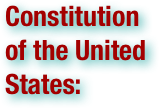
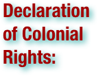

The American Revolution: Terms
"Republican Motherhood" identifies the concept related to women's roles as mothers in the emerging United States before, during, and after the American Revolution (c. 1760 to 1800). It centered on the belief that children should be raised to uphold the ideals of republicanism, making them the ideal citizens of the new nation. Republican motherhood meant a new and important role for women, especially regarding civic duty and education, but it did not soon lead to the vote for women. (wikipedia.org. Accessed August 4, 2011.)

.pdf (. . . )


The American Revolution was the political upheaval during the last half of the 18th century in which thirteen colonies in North America joined together to break free from the British Empire, combining to become the United States of America. They first rejected the authority of the Parliament of Great Britain to govern them from overseas without representation, and then expelled all royal officials. By 1774 each colony had established a Provincial Congress, or an equivalent governmental institution, to form individual self-governing states, but still within the empire. The British responded by sending combat troops to re-impose direct rule. Through representatives sent in 1775 to the Second Continental Congress, the new states joined together at first to defend their respective self-governance and manage the armed conflict against the British known as the American Revolutionary War (1775–83, also American War of Independence). Ultimately, the states collectively determined that the British monarchy, by acts of tyranny, could no longer legitimately claim their allegiance. They then severed ties with the British Empire in July 1776, when the Congress issued the United States Declaration of Independence, rejecting the monarchy on behalf of the new sovereign nation separate and external to the British Empire. The war ended with effective American victory in October 1781, followed by formal British abandonment of any claims to the United States with the Treaty of Paris in 1783. The American Revolution was the result of a series of social, political, and intellectual transformations in early American society and government, collectively referred to as the American Enlightenment. Americans rejected the oligarchies common in aristocratic Europe at the time, championing instead the development of republicanism based on the Enlightenment understanding of liberalism. Among the significant results of the revolution was the creation of a democratically-elected representative government responsible to the will of the people. However, sharp political debates erupted over the appropriate level of democracy desirable in the new government, with a number of Founders fearing mob rule. Many fundamental issues of national governance were settled with the ratification of the United States Constitution in 1788, which replaced the relatively weaker first attempt at a national government adopted in 1781, the Articles of Confederation and Perpetual Union. In contrast to the loose confederation, the Constitution established a strong federated government. The United States Bill of Rights (1791), comprising the first 10 constitutional amendments, quickly followed. It guaranteed many "natural rights" that were influential in justifying the revolution, and attempted to balance a strong national government with relatively broad personal liberties. The American shift to liberal republicanism, and the gradually increasing democracy, caused an upheaval of traditional social hierarchy and gave birth to the ethic that has formed a core of political values in the United States. (wikipedia.org. Accessed August 4, 2011.)

Representative democracy is a form of government founded on the principle of elected individuals representing the people, as opposed to autocracy and direct democracy. (wikipedia.org. Accessed August 4, 2011.)

Patriots (also known as American Whigs, Revolutionaries, Congress-Men or Rebels) is a name often used to describe the colonists of the British Thirteen United Colonies who rebelled against British control during the American Revolution. It was their leading figures who, in July 1776, declared the United States of America an independent nation. Their rebellion was based on the political philosophy of republicanism, as expressed by pamphleteers, such as Thomas Jefferson, Alexander Hamilton, and Thomas Paine. They called themselves Whigs after 1768, identifying with members of the British Whig party (including the Radical Whigs and Patriot Whigs), who favored similar colonial policies. As a group, Patriots represented an array of social, economic, ethnic and racial backgrounds. They included college students like Alexander Hamilton; planters like Thomas Jefferson; merchants like Alexander McDougall; lawyers like John Adams; and plain farmers like Daniel Shays and Joseph Plumb Martin. (wikipedia.org. Accessed August 4, 2011.)

The American Revolutionary War (1775–1783) or American War of Independence, or simply Revolutionary War, began as a war between the Kingdom of Great Britain and thirteen British colonies in North America, and ended in a global war between several European great powers. The war was the result of the political American Revolution, which galvanized around the dispute between the Parliament of Great Britain and colonists opposed to the Stamp Act of 1765, which the Americans protested as unconstitutional. The Parliament insisted on its right to tax colonists; the Americans claimed their rights as Englishmen to no taxation without representation. The Americans formed a unifying Continental Congress and a shadow government in each colony. The American boycott of British tea led to the Boston Tea Party in 1773. London responded by ending self government in Massachusetts and putting it under the control of the army with General Thomas Gage as governor. In April of 1775, Gage sent a contingent of troops out of Boston to seize rebel arms. Local militia, known as 'minutemen,' confronted the British troops and nearly destroyed the British column. The Battles of Lexington and Concord ignited the war. Any chance of a compromise ended when the colonies declared independence and formed a new nation, the United States of America on July 4, 1776. France, Spain and the Dutch Republic all secretly provided supplies, ammunition and weapons to the revolutionaries starting early in 1776. After early British success, the war became a standoff. The British used their naval superiority to capture and occupy American coastal cities while the rebels largely controlled the countryside, where 90 percent of the population lived. British strategy relied on mobilizing Loyalist militia, and was never fully realized. A British invasion from Canada ended in the capture of the British army at the Battle of Saratoga in 1777. That American victory persuaded France to enter the war openly in early 1778, balancing the two sides' military strength. Spain and the Dutch Republic—French allies—also went to war with Britain over the next two years, threatening an invasion of Great Britain and severely testing British military strength with campaigns in Europe. Spain's involvement culminated in the expulsion of British armies from West Florida, securing the American southern flank. French involvement proved decisive yet expensive as it ruined France's economy. A French naval victory in the Chesapeake forced a second British army to surrender at the Siege of Yorktown in 1781. In 1783, the Treaty of Paris ended the war and recognized the sovereignty of the United States over the territory bounded roughly by what is now Canada to the north, Florida to the south, and the Mississippi River to the west. (wikipedia.org. Accessed August 4, 2011.)

The Petition to the King was a petition sent to George III of Great Britain by the First Continental Congress. The petition expressed loyalty to the king and hoped for redress of grievances relating to the Intolerable Acts and other issues that helped foment the American Revolution. During the American Revolutionary War (1775–83) the management and treatment of prisoners of war (POW) was very different from the standards of modern warfare. Modern standards, as outlined in the Geneva Conventions, expect captives to be held and cared for by their captors. One primary difference in the eighteenth century was that care and supplies for captives were expected to be provided by their own army, their government, or private resources. However, it was not until seven years into the conflict and only one year before the Treaty of Paris (1783) officially ended the war, and primarily as a consequence of the Battle of Yorktown in 1781 resulting in the second British army of the war being captured, that American combatants were finally recognized as POWs by the Parliament of Great Britain in 1782. (wikipedia.org. Accessed August 4, 2011.)

Republicanism is the political value system that has been a major part of American civic thought since the American Revolution. It stresses liberty and inalienable rights as central values, makes the people as a whole sovereign, supports activist government to promote the common good, rejects inherited political power, expects citizens to be independent in their performance of civic duties, and vilifies corruption. American republicanism was founded and first practiced by the Founding Fathers in the 18th century. This system was based on early Roman, Renaissance and English models and ideas. It formed the basis for the American Revolution and the consequential Declaration of Independence (1776) and the Constitution (1787), as well as the Gettysburg Address. Republicanism is not the same as democracy, for republicanism asserts that people have unalienable rights that cannot be voted away by a majority of voters. Since the 1830s when Alexis de Tocqueville warned about the "tyranny of the majority" in a democracy, advocates of the rights of minorities have warned that the courts needed to protect those rights by reversing efforts by voters to terminate the rights of an unpopular minority. (This concern actually pre-dated de Tocqueveille by decades, and was the primary reason for the Bill of Rights, as protections for individuals and minority factions against the power of the democratically elected federal government.) "Republicanism" is derived from the term "republic", but the two words have different meanings, and people sometimes confuse them. "Republic" is a form of government and "republicanism" is a political ideology. Two major parties were explicitly named after the idea—the Republican party of Thomas Jefferson (founded in 1793, and often called the "Democratic-Republican party" by political scientists), and the current Republican party (founded in 1854). (wikipedia.org. Accessed August 4, 2011.)

The Annapolis Convention was an Assembly of the Counties of Maryland that functioned as the colony's revolutionary government from 1774 to 1776. After 1775, it was officially named the Assembly of Freemen. (wikipedia.org. Accessed August 4, 2011.)

The Battle of Bunker Hill took place on June 17, 1775, mostly on and around Breed's Hill, during the Siege of Boston early in the American Revolutionary War. The battle is named after the adjacent Bunker Hill, which was peripherally involved in the battle and was the original objective of both colonial and British troops, and is occasionally referred to as the "Battle of Breed's Hill." On June 13, 1775, the leaders of the colonial forces besieging Boston learned that the British generals were planning to send troops out from the city to occupy the unoccupied hills surrounding the city. In response to this intelligence, 1,200 colonial troops under the command of William Prescott stealthily occupied Bunker Hill and Breed's Hill, constructed an earthen redoubt on Breed's Hill, and built lightly fortified lines across most of the Charlestown Peninsula. When the British were alerted to the presence of the new position the next day, they mounted an attack against them. After two assaults on the colonial lines were repulsed with significant British casualties, the British finally captured the positions on the third assault, after the defenders in the redoubt ran out of ammunition. The colonial forces retreated to Cambridge over Bunker Hill, suffering their most significant losses on Bunker Hill. While the result was a victory for the British, they suffered heavy losses: over 800 wounded and 226 killed, including a notably large number of officers. The battle is seen as an example of a Pyrrhic victory, as while their immediate objective (the capture of Bunker Hill) was achieved, the loss of nearly a third of their forces did not significantly alter the state of siege. Meanwhile, colonial forces were able to retreat and regroup in good order having suffered few casualties. Furthermore, the battle demonstrated that relatively inexperienced colonial forces were willing and able to stand up to regular army troops in a pitched battle. (wikipedia.org. Accessed August 4, 2011.)


The Philadelphia campaign (1777–1778) was a British initiative in the American Revolutionary War to gain control of Philadelphia, which was then the seat of the Second Continental Congress. British General William Howe, after unsuccessfully attempting to draw Continental Army General George Washington into a battle in northern New Jersey, embarked his army on transports, and landed them at the northern of Chesapeake Bay. From there, he advanced northward toward Philadelphia. Washington prepared defenses against Howe's movements at Brandywine Creek, but was flanked and beaten back in the Battle of Brandywine on September 11, 1777. After further skirmishes and maneuvers, Howe was able to enter and occupy Philadelphia. Washington then unsuccessfully attacked one of Howe's garrisons at Germantown before retreating to Valley Forge for the winter. Howe's campaign was controversial because, although he successfully captured the American capital of Philadelphia, he proceeded slowly and did not aid the concurrent campaign of John Burgoyne further north, which ended in disaster at Saratoga for the British, and brought France into the war. General Howe resigned during the occupation of Philadelphia and was replaced by his second-in-command, General Sir Henry Clinton. Clinton evacuated the troops from Philadelphia back to New York City in 1778 in order to increase that city's defenses against a possible Franco-American attack. Washington harried the British army all the way across New Jersey, and successfully forced a battle at Monmouth Court House that was one of the largest battles of the war. At the end of the campaign the two armies were roughly in the same positions they were at its beginning. (wikipedia.org. Accessed August 4, 2011.)

The Battle of Camden was a major victory for the British in the Southern theater of the American Revolutionary War (American War of Independence). On August 16, 1780, British forces under Lieutenant General Charles, Lord Cornwallis routed the American forces of Major General Horatio Gates about 10 km (six miles) north of Camden, South Carolina, strengthening the British hold on the Carolinas following the capture of Charleston. The rout was an humiliating defeat for Gates, the American general best known for commanding the Americans at the British defeat of Saratoga, whose army had possessed a large numerical superiority over the British force. Following the battle, he never held a field command again. His political connections, however, helped him avoid inquiries and courts martial into the debacle. (wikipedia.org. Accessed August 4, 2011.)

The Battle of the Chesapeake, also known as the Battle of the Virginia Capes or simply the Battle of the Capes, was a crucial naval battle in the American War of Independence that took place near the mouth of Chesapeake Bay on 5 September 1781, between a British fleet led by Rear Admiral Sir Thomas Graves and a French fleet led by Rear Admiral François Joseph Paul, comte de Grasse. The battle was tactically inconclusive but strategically a major defeat for the British, since it prevented the Royal Navy from reinforcing or evacuating the blockaded forces of General Lord Cornwallis at Yorktown, Virginia. It also prevented British interference with the transport of French and Continental Army troops and provisions to Yorktown via Chesapeake Bay. As a result, Cornwallis surrendered his army after the Siege of Yorktown. The major consequence of Cornwallis's surrender was the beginning of negotiations that eventually resulted in peace and British recognition of the independent United States of America. Presented in July 1781 with the options of either attacking British forces in New York or Virginia, Admiral de Grasse opted for the latter, arriving at the Chesapeake at the end of August. Upon learning that de Grasse had sailed from the West Indies for North America, and that French Admiral de Barras had also sailed from Newport, Rhode Island, Admiral Graves concluded that they were going to join forces at the Chesapeake. Sailing south from New York with 19 ships of the line, Graves arrived at the mouth of the Chesapeake early on 5 September to see de Grasse's fleet at anchor in the bay. De Grasse hastily prepared most of his fleet, 24 ships of the line, for battle and sailed out to meet Graves. In a two-hour engagement that took place after hours of maneuvering, the lines of the two fleets did not completely meet, with only the forward and center sections of the lines fully engaging. The battle was consequently fairly evenly matched, although the British suffered more casualties and ship damage. The battle broke off when the sun set. British tactics in the battle have been a subject of contemporary and historic debate. For several days the two fleets sailed within view of each other, with de Grasse preferring to lure the British away from the bay, where de Barras was expected to arrive carrying vital siege equipment. On 13 September de Grasse broke away from the British and returned to the Chesapeake, where de Barras had arrived. Graves returned to New York to organize a larger relief effort; this did not sail until 19 October, two days after Cornwallis surrendered. (wikipedia.org. Accessed August 4, 2011.)


The Proclamation of Rebellion, officially titled A Proclamation for Suppressing Rebellion and Sedition, was the response of George III of the United Kingdom to the news of the Battle of Bunker Hill at the outset of the American Revolutionary War. Issued August 23, 1775, it declared elements of the American colonies in a state of "open and avowed rebellion". It ordered officials of the British Empire "to use their utmost endeavors to withstand and suppress such rebellion". The Proclamation also encouraged subjects throughout the Empire, including those in Great Britain, to report anyone carrying on "traitorous correspondence" with the rebels so that they could be punished. The Second Continental Congress issued a response to the Proclamation on December 6, saying that while they had always been loyal to the king, the British Parliament never had any legitimate claim to authority over them, because the colonies were not democratically represented. Congress argued that it was their duty to continue resisting Parliament's violations of the British Constitution, and that they would retaliate if any supporters in Great Britain were punished for "favoring, aiding, or abetting the cause of American liberty". Congress maintained that they still hoped to avoid the "calamities" of a "civil war". The Proclamation was written before Colonial Secretary Lord Dartmouth had been given a copy of the Olive Branch Petition from the Continental Congress. Because the king refused to receive the petition, the Proclamation effectively served as an answer to the petition. On October 26, 1775, King George expanded on the Proclamation in his Speech from the Throne at the opening of Parliament. The King insisted that rebellion was being fomented by a "desperate conspiracy" of leaders whose claims of allegiance to him were insincere; what the rebels really wanted, he said, was to create an "independent Empire". The king indicated that he intended to deal with the crisis with armed force, and was even considering "friendly offers of foreign assistance" to suppress the rebellion. A pro-American minority in Parliament warned that the government was driving the colonists towards independence, something that many colonial leaders had insisted they did not desire. The Proclamation and the Speech from the Throne undermined moderates in the Continental Congress like John Dickinson, who had been arguing that the king would find a way to resolve the dispute between the colonies and Parliament. When it became clear that the king was not inclined to act as a conciliator, colonial attachment to the Empire was weakened, and a movement towards declaring independence became a reality. (wikipedia.org. Accessed August 4, 2011.)

The Battles of Lexington and Concord were the first military engagements of the American Revolutionary War. They were fought on April 19, 1775, in Middlesex County, Province of Massachusetts Bay, within the towns of Lexington, Concord, Lincoln, Menotomy (present-day Arlington), and Cambridge, near Boston. The battles marked the outbreak of open armed conflict between the Kingdom of Great Britain and its thirteen colonies in the mainland of British North America. About 700 British Army regulars, under Lieutenant Colonel Francis Smith, were given secret orders to capture and destroy military supplies that were reportedly stored by the Massachusetts militia at Concord. Through effective intelligence gathering, Patriot colonials had received word weeks before the expedition that their supplies might be at risk and had moved most of them to other locations. They also received details about British plans on the night before the battle and were able to rapidly notify the area militias of the enemy movement. The first shots were fired just as the sun was rising at Lexington. The militia were outnumbered and fell back, and the regulars proceeded on to Concord, where they searched for the supplies. At the North Bridge in Concord, approximately 500 militiamen fought and defeated three companies of the King's troops. The outnumbered regulars fell back from the minutemen after a pitched battle in open territory. More militiamen arrived soon thereafter and inflicted heavy damage on the regulars as they marched back towards Boston. Upon returning to Lexington, Smith's expedition was rescued by reinforcements under Lieutenant-General Hugh Percy. The combined force, now of about 1,700 men, marched back to Boston under heavy fire in a tactical withdrawal and eventually reached the safety of Charlestown. The accumulated militias blockaded the narrow land accesses to Charlestown and Boston, starting the Siege of Boston. Ralph Waldo Emerson, in his "Concord Hymn", described the first shot fired by the Patriots at the North Bridge as the "shot heard 'round the world." (wikipedia.org. Accessed August 4, 2011.)

The Battle of Long Island, also known as the Battle of Brooklyn or the Battle of Brooklyn Heights, fought on August 27, 1776, was the first major battle in the American Revolutionary War following the United States Declaration of Independence, the largest battle of the entire conflict, and the first battle in which an army of the United States engaged, having declared itself a nation only the month before. After defeating the British in the Siege of Boston on March 17, 1776, General George Washington, Commander-in-Chief, brought the Continental Army to defend New York City, then limited to the southern end of Manhattan Island. There he established defenses and waited for the British to attack. In July the British, under the command of General William Howe, landed a few miles across the harbor on Staten Island, where they were slowly reinforced by ships in Lower New York Bay over the next month and a half, bringing their total force to 32,000 men. With the British fleet in control of the entrance to New York Harbor, Washington knew the difficulty in holding the city. Believing Manhattan would be the first target, he moved the bulk of his forces there. On August 22, the British landed on the western end of Long Island, across The Narrows from Staten Island, more than a dozen miles south from the East River crossings to Manhattan. After five days of waiting, the British attacked American defenses on the Guana (Gowanus) Heights. Unknown to the Americans, however, Howe had brought his main army around their rear and attacked their flank soon after. The Americans panicked, although a stand by 400 Maryland troops prevented most of the army from being captured. The remainder of the army fled to the main defenses on Brooklyn Heights. The British dug in for a siege but, on the night of August 29–30, Washington evacuated the entire army to Manhattan without the loss of material or a single life. Washington and the Continental Army were driven out of New York entirely after several more defeats and forced to retreat through New Jersey and into Pennsylvania. (wikipedia.org. Accessed August 4, 2011.)

The Battle of Quebec was fought on December 31, 1775 between American Continental Army forces and the British defenders of the city of Quebec, early in the American Revolutionary War. The battle was the first major defeat of the war for the Americans, and it came at a high price. General Richard Montgomery was killed, Benedict Arnold was wounded, and Daniel Morgan and more than 400 men were taken prisoner. The city's garrison, a motley assortment of regular troops and militia led by Quebec's provincial governor, General Guy Carleton, suffered a small number of casualties. Montgomery's army had captured Montreal on November 13, and in early December they joined a force led by Arnold, whose men had made an arduous trek through the wilderness of northern New England. Governor Carleton had escaped from Montreal to Quebec, the Americans' next objective, and last-minute reinforcements arrived to bolster the city's limited defenses before the attacking force's arrival. Concerned that expiring enlistments would reduce his force, Montgomery made the end-of-year attack in a blinding snowstorm to conceal his army's movements. The plan was for separate forces led by Montgomery and Arnold to converge in the lower city before scaling the walls protecting the upper city. Montgomery's force turned back after he was killed by cannon fire early in the battle, but Arnold's force penetrated further into the lower city. Arnold was injured early in the attack, and Morgan led the assault in his place before he became trapped in the lower city and was forced to surrender. Arnold and the Americans maintained an ineffectual blockade of the city until spring, when British reinforcements arrived. In the battle and the following siege, French-speaking Canadiens were active on both sides of the conflict. The American forces received supplies and logistical support from local residents, and the city's defenders included locally raised militia. When the Americans retreated, they were accompanied by a number of their supporters; those who remained behind were subjected to a variety of punishments after the British re-established control over the province. (wikipedia.org. Accessed August 4, 2011.)

In political philosophy, the right of revolution (or right of rebellion) is the right or duty, variously stated throughout history, of the people of a nation to overthrow a government that acts against their common interests. Belief in this right extends back to ancient China, and it has been used throughout history to justify various rebellions, including the American Revolution and the French Revolution. (wikipedia.org. Accessed August 4, 2011.)

The Battles of Saratoga, sometimes referred to as the Battle of Saratoga (September 19 and October 7, 1777), conclusively decided the fate of British General John Burgoyne's army in the American Revolutionary War (known outside the US as the American War of Independence) and are generally regarded as a turning point in the war. The battles were fought eighteen days apart on the same ground, 9 miles (14 km) south of Saratoga, New York. Burgoyne, whose campaign to divide New England from the southern colonies had started well, but slowed due to logistical problems, won a small tactical victory over General Horatio Gates and the Continental Army in the September 19 Battle of Freeman's Farm at the cost of significant casualties. His gains were erased when he again attacked the Americans in the October 7 Battle of Bemis Heights and the Americans captured a portion of the British defenses. Burgoyne was therefore compelled to retreat, and his army was surrounded by the much larger American force at Saratoga, forcing him to surrender on October 17. News of Burgoyne's surrender was instrumental in formally bringing France into the war as an American ally, although it had previously given supplies, ammunition and guns, notably the de Valliere cannon, which played an important role in Saratoga. Formal participation by France changed the war to a global conflict. This battle also resulted in Spain contributing to the war on the American side. The first battle, on September 19, began when Burgoyne moved some of his troops in an attempt to flank the entrenched American position on Bemis Heights. Benedict Arnold, anticipating the maneuver, placed significant forces in his way. While Burgoyne succeeded in gaining control of Freeman's Farm, it came at the cost of significant casualties. Skirmishing continued in the days following the battle, while Burgoyne waited in the hope that reinforcements would arrive from New York City. Militia forces continued to arrive, swelling the size of the American army. Disputes within the American camp led Gates to strip Arnold of his command. Concurrently with the first battle, American troops also attacked British positions in the area of Fort Ticonderoga, and bombarded the fort for a few days before withdrawing. British General Sir Henry Clinton, in an attempt to divert American attention from Burgoyne, captured American forts in the Hudson River highlands on October 6, but his efforts were too late to help Burgoyne. Burgoyne attacked Bemis Heights again on October 7 after it became apparent he would not receive relieving aid in time. In heavy fighting, marked by Arnold's spirited rallying of the American troops (in open defiance of orders to stay off the battlefield), Burgoyne's forces were thrown back to the positions they held before the September 19 battle and the Americans captured a portion of the entrenched British defenses. (wikipedia.org. Accessed August 4, 2011.)

"Provincial Congress" can refer to one of several extra-legal legislative bodies established in some of the Thirteen Colonies early in the American Revolution. These bodies were generally renamed or replaced with other bodies when the provinces declared themselves states. They include: Massachusetts Provincial Congress, North Carolina Provincial Congress, New York Provincial Congress, Provincial Congress of New Jersey, South Carolina Provincial Congress, Georgia Provincial Congress and New Hampshire Provincial Congress. Analogous bodies include the Annapolis Convention (1774–1776) and the Virginia Conventions. (wikipedia.org. Accessed August 4, 2011.)

The Province of Maryland was an English colony in North America that existed from 1632 until 1776, when it joined the other twelve of the Thirteen Colonies in rebellion against Great Britain and became the U.S. state of Maryland. The province began as a proprietary colony of the English Lords Baltimore, who wished to create a haven for English Catholics in the new world at the time of the European wars of religion. Although Maryland was an early pioneer of religious toleration in the English colonies, religious strife among Anglicans, Puritans, Catholics, and Quakers was common in the early years, and Puritan rebels briefly seized control of the province. In the year following the Glorious Revolution, John Coode led a Protestant rebellion that expelled Lord Baltimore from power in Maryland. Coode's government was unpopular and both William III and Coode himself wished to install a crown-appointed governor. This man ended up being Lionel Copley who governed Maryland until his death in 1694 and was replaced by Francis Nicholson. It was restored to the family when Charles Calvert, 5th Baron Baltimore, swore publicly that he was a Protestant. Despite early competition with the colony of Virginia to its south, and the Dutch colony of New Netherland to its north, the Province of Maryland developed along very similar lines to Virginia. Its early settlements and populations centers tended to cluster around the rivers and other waterways that empty into the Chesapeake Bay. Like Virginia, Maryland's economy quickly became centered around the farming of tobacco for sale in Europe. The need for cheap labor to help with the growth of tobacco, and later with the mixed farming economy that developed when tobacco prices collapsed, led to a rapid expansion of indentured servitude and, later, forcible immigration and enslavement of Africans. In the latter colonial period, the southern and eastern portions of the Province continued in their tobacco economy, but as the revolution approached, northern and central Maryland increasingly became centers of wheat production. This helped drive the expansion of interior farming towns like Frederick and Maryland's major port city of Baltimore. The Province of Maryland was an active participant in the events leading up to the American revolution, and echoed events in New England by establishing committees of correspondence and hosting its own tea party similar to the one that took place in Boston. (wikipedia.org. Accessed August 4, 2011.)

A Black Loyalist was an inhabitant of British America of African descent who joined British colonial forces during the American Revolutionary War. Many had been enslaved and decided to fight on the side of the British in return for promises of freedom from enslavement. Some 3,000 Black Loyalists were evacuated from New York to Nova Scotia; they were individually listed in the Book of Negroes as the British arranged for transport. The original of the Book of Negroes and an authenticated transcript is now online. United Empire Loyalists who migrated to Nova Scotia brought another 2500 enslaved Africans with them. These were not regarded as Loyalists, since they had no choice in their fates. Some of the Black Loyalists were evacuated to London. They were included in the population of the Black Poor. With government assistance, 4,000 blacks were transported for resettlement to the colony of Sierra Leone in 1787. Five years later, another 1,192 Black loyalists from Nova Scotia also migrated to Sierra Leone. They became known in Sierra Leone as the Nova Scotian settlers and were part of creating a new nation and government. The modern day Sierra Leone Creole people are their descendants. Thomas Jefferson referred to them as "the fugitives from these States." (wikipedia.org. Accessed August 4, 2011.)

The Boston campaign was the opening campaign of the American Revolutionary War. The campaign was primarily concerned with the formation of American colonial irregular militia units, and their transformation into a unified Continental Army. The campaign's military conflicts started with the Battles of Lexington and Concord on April 19, 1775, in which colonial militias mustered to defend against the seizure of military stores in Concord, Massachusetts by British Army regulars. Some British units were defeated in a confrontation at Concord's North Bridge, and the entire British expedition suffered significant casualties during a running battle back to Charlestown against an ever-growing number of colonial militia. The accumulated militia surrounded the city of Boston, beginning the Siege of Boston. The main action during the siege, the Battle of Bunker Hill on June 17, 1775, was one of the bloodiest encounters of the entire war. There were also numerous skirmishes near Boston and the coastal areas of Boston, resulting in either loss of life, military supplies, or both. In July 1775, George Washington took command of the assembled militia and transformed them into a more coherent army. On March 4, 1776, the colonial army fortified Dorchester Heights with cannon capable of reaching Boston and British ships in the harbor. The siege (and the campaign) ended on March 17, 1776, with the withdrawal of British forces from Boston. (wikipedia.org. Accessed August 4, 2011.)

The Boston Massacre, called the Boston Riot by the English, was an incident on March 5, 1770, in which British redcoats killed five civilian men. It helped spark the rebellion in some of the British American colonies, which culminated in the American Revolutionary War. The British increase in troops in Boston led to a tense situation that erupted into brawls between soldiers and civilians. The troops fired after being threatened by a mob. Three rioting civilians were killed at the scene of the shooting, eleven were injured, and two died after the incident. . . The Boston Massacre is considered one of most important events that turned colonial sentiment against King George III and British acts and taxes. Each of these events followed a pattern of Britain asserting its control, and the colonists' chafing under the increased regulation. Events such as the Tea Act and the ensuing Boston Tea Party were further examples of the crumbling relationship between Britain and the colonies. While five years passed from the Massacre to outright revolution, the event foreshadowed the violent rebellion to come. It also demonstrated how British authority galvanized colonial opposition and protest. (wikipedia.org. Accessed August 4, 2011.)

The rights of Englishmen are the perceived traditional rights of British subjects. The notion refers to various constitutional documents that were created throughout various stages of English history, such as the Magna Carta, the Declaration of Right (the text of which was recognized by Parliament in the Bill of Rights 1689), and others. Many Patriots in the Thirteen colonies argued that their rights as Englishmen were being violated, which subsequently became one of the original primary justifications for the American Revolution and the resulting separation from the British Empire. (wikipedia.org. Accessed August 4, 2011.)

The Boston Tea Party was a direct action by colonists in Boston, a town in the British colony of Massachusetts, against the British government and the monopolistic East India Company that controlled all the tea coming into the colonies. On December 16, 1773, after officials in Boston refused to return three shiploads of taxed tea to Britain, a group of colonists boarded the ships and destroyed the tea by throwing it into Boston Harbor. The incident remains an iconic event of American history, and other political protests often refer to it. The Tea Party was the culmination of a resistance movement throughout British America against the Tea Act, which had been passed by the British Parliament in 1773. Colonists objected to the Tea Act for a variety of reasons, especially because they believed that it violated their right to be taxed only by their own elected representatives. Protesters had successfully prevented the unloading of taxed tea in three other colonies, but in Boston, embattled Royal Governor Thomas Hutchinson refused to allow the tea to be returned to Britain. He apparently did not expect that the protestors would choose to destroy the tea rather than concede the authority of a legislature in which they were not directly represented. The Boston Tea Party was a key event in the growth of the American Revolution. Parliament responded in 1774 with the Coercive Acts, which, among other provisions, closed Boston's commerce until the British East India Company had been repaid for the destroyed tea. Colonists in turn responded to the Coercive Acts with additional acts of protest, and by convening the First Continental Congress, which petitioned the British monarch for repeal of the acts and coordinated colonial resistance to them. The crisis escalated, and the American Revolutionary War began near Boston in 1775. (wikipedia.org. Accessed August 4, 2011.)

A boycott is an act of voluntarily abstaining from using, buying, or dealing with a person, organization, or country as an expression of protest, usually for political reasons. It can be a form of consumer activism. (wikipedia.org. Accessed August 4, 2011.)

The Boston Port Act is an Act of the Parliament of Great Britain which became law on March 30, 1774, and is one of the measures (variously called the Intolerable Acts, the Punitive Acts or the Coercive Acts) that were designed to secure Great Britain's jurisdictions over her American dominions. A response to the Boston Tea Party, it outlawed the use of the Port of Boston (by setting up a barricade/blockade) for "landing and discharging, loading or shipping, of goods, wares, and merchandise" until such time as restitution was made to the King's treasury (for customs duty lost) and to the East India Company for damages suffered. In other words, it closed Boston Port to all ships, no matter what business the ship had. Colonists objected that the Port Act punished all of Boston rather than just the individuals who had destroyed the tea, and that they were being punished without having been given an opportunity to testify in their own defense. All the citizens of Boston were angered including the Loyalists and Patriots (otherwise known as Whigs and Tories) and they all sought for aid from the other colonies. As the Port of Boston was a major source of supplies for the citizens of Massachusetts, sympathetic colonies as far away as South Carolina sent relief supplies to the settlers of Massachusetts Bay. This was the first step in the unification of the thirteen colonies. The First Continental Congress was convened in Philadelphia on September 5, 1774, to coordinate a colonial response to the Port Act and the other Coercive Acts. (wikipedia.org. Accessed August 4, 2011.)

British America is the anachronistic term used to refer to the territories under the control of the Crown or Parliament in present day North America (including Bermuda), Central America, the Caribbean, and Guyana. Colonial America consisted of the English and later British Empire in continental North America in the 17th and 18th centuries. Formally, the British Colonies in North America were known as British America and the British West Indies until 1776, when the United States of America declared their independence. After that, British North America (or, simply but not inclusively, Canada) were used to describe the remainder of Britain's continental North American possessions. The term "British North America" was first used informally in 1783, but it was uncommon before the Report on the Affairs of British North America (1839), called the Durham Report. British America gained large amounts of new territory following the Treaty of Paris which ended Britain's involvement in the Seven Years' War. At the start of the American War of Independence in 1775, the British Empire included twenty colonies north and east of New Spain (Present day areas of Mexico and the Western United States). East Florida and West Florida were ceded to Spain in the Treaty of Paris (1783) which ended the American Revolution, and then ceded by Spain to the United States in 1819. All but one of the remaining colonies of British North America apart from the British West Indies united together from 1867 to 1873 forming the Dominion of Canada. Newfoundland joined Canada in 1949. (wikipedia.org. Accessed August 4, 2011.)

The British Empire comprised the dominions, colonies, protectorates, mandates, and other territories ruled or administered by the United Kingdom. It originated with the overseas colonies and trading posts established by England in the late 16th and early 17th centuries. At its height it was the largest empire in history and, for over a century, was the foremost global power. By 1922 the British Empire held sway over about 458 million people, one-quarter of the world's population at the time, and covered more than 33,700,000 km2 (13,012,000 sq mi), almost a quarter of the Earth's total land area. As a result, its political, linguistic and cultural legacy is widespread. At the peak of its power, it was often said that "the sun never sets on the British Empire" because its span across the globe ensured that the sun was always shining on at least one of its numerous territories. During the Age of Discovery in the 15th and 16th centuries, Portugal and Spain pioneered European exploration of the globe, and in the process established large overseas empires. Envious of the great wealth these empires bestowed, England, France and the Netherlands began to establish colonies and trade networks of their own in the Americas and Asia. A series of wars in the 17th and 18th centuries with the Netherlands and France left England (Britain, following the 1707 Act of Union with Scotland) the dominant colonial power in North America and India. The loss of the Thirteen Colonies in North America in 1783 after a war of independence deprived Britain of some of its oldest and most populous colonies. British attention soon turned towards Africa, Asia and the Pacific. Following the defeat of Napoleonic France in 1815, Britain enjoyed a century of almost unchallenged dominance, and expanded its imperial holdings across the globe. Increasing degrees of autonomy were granted to its white settler colonies, some of which were reclassified as dominions. (wikipedia.org. Accessed August 4, 2011.)

The Province of New Hampshire is a name first given in 1629 to the territory between the Merrimack and Piscataqua rivers on the eastern coast of North America. It was formally organized as an English crown colony on October 7, 1691, during the period of English colonization. The charter was enacted May 14, 1692, by William and Mary, the joint monarchs of England and Scotland, at the same time that the Province of Massachusetts Bay was created. The territory is now the U.S. state of New Hampshire, and was named after the county of Hampshire in southern England by Captain John Mason, its first proprietor. First settled in the 1620s, the province consisted for many years of a small number of communities along the seacoast and the Piscataqua River. In 1641 the communities came under the government of the neighboring Massachusetts Bay Colony, until King Charles II issued a commission to John Cutt as President of New Hampshire in 1679. After a brief period as a separate province, the territory was absorbed into the Dominion of New England in 1686. The Dominion collapsed in 1689, and the New Hampshire communities again came under Massachusetts rule until a provincial charter was issued in 1691 by William and Mary. Between 1699 and 1741 the province's governors were also commissioned as governors of the Province of Massachusetts Bay. In 1741, Benning Wentworth was appointed governor solely of New Hampshire. Wentworth laid claim on behalf of the province to the lands west of the Connecticut River, issuing controversial land grants that were disputed by the Province of New York, which also claimed the territory. These disputes resulted in the eventual formation of the state of Vermont. The province's economy was dominated by timber and fishing. The timber trade, although lucrative, was a subject of conflict with the crown, which sought to reserve the best trees for use as ship masts. Although the province was ruled for many years by the Puritan leaders of Massachusetts, its population was more religiously diverse, originating in part in its early years with refugees from opposition to religious differences in Massachusetts. From the 1680s until 1760 the province was often on the front lines of military conflicts with New France and the indigenous Abenaki people, seeing major attacks on its communities in King William's War, Dummer's War, and King George's War. The province was at first not strongly in favor of independence, but with the start of the American Revolutionary War, many of its inhabitants joined the revolutionary cause. After Governor John Wentworth fled the province in August 1775, the inhabitants adopted a constitution in early 1776. Independence as part of the United States was confirmed with the 1783 Treaty of Paris. (wikipedia.org. Accessed August 4, 2011.)

The Royal Proclamation of 1763 was issued October 7, 1763, by King George III following Great Britain's acquisition of French territory in North America after the end of the French and Indian War/Seven Years' War. The purpose of the proclamation was to organize Great Britain's new North American empire and to stabilize relations with Native North Americans through regulation of trade, settlement, and land purchases on the western frontier. The Royal Proclamation continues to be of legal importance to First Nations in Canada and is significant for the variation of indigenous status in the United States. (wikipedia.org. Accessed August 4, 2011.)

The Caribbean is a region consisting of the Caribbean Sea, its islands (most of which are enclosed by the sea), and the surrounding coasts. The region is located southeast of the Gulf of Mexico and North America, east of Central America, and to the north of South America. Situated largely on the Caribbean Plate, the region comprises more than 7,000 islands, islets, reefs, and cays. These islands, called the West Indies, generally form island arcs that delineate the eastern and northern edges of the Caribbean Sea. These islands are called the West Indies because when Christopher Columbus landed there in 1492 he believed that he had reached to the west of The India (The Indian sub-continent). The region consists of the Antilles, divided into the larger Greater Antilles which bound the sea on the north, the Lesser Antilles on the south and east (including the Leeward Antilles), the Bahamas, and the Turks and Caicos Islands or the Lucayan Archipelago, which are in fact in the Atlantic Ocean north of Cuba, not in the Caribbean Sea. Geopolitically, the West Indies are usually regarded as a subregion of North America and are organized into 30 territories including sovereign states, overseas departments, and dependencies. From January 3, 1958, to May 31, 1962, there was a short-lived country called the Federation of the West Indies composed of ten English-speaking Caribbean territories, all of which were then UK dependencies. The West Indies cricket team continues to represent many of those nations. (wikipedia.org. Accessed August 4, 2011.)

The Chickamauga Wars (1776–1794) were a series of back-and-forth raids, campaigns, ambushes, minor skirmishes, and several full-scale frontier battles which were a continuation of the Cherokee struggle against encroachment into their territory by American frontiersmen from the former British colonies, and, until the end of the American Revolution, their contribution to the war effort as British allies. After 1786, they also fought along with and as members of the Western Confederacy. Open warfare broke out in the summer of 1776 between the Cherokee led by Dragging Canoe (a group first called the "Chickamauga" or "Chickamauga-Cherokee" by the colonials, and later the "Lower Cherokee") and frontier settlers along the Watauga, Holston, Nolichucky, and Doe Rivers in East Tennessee. It later spread to those along the Cumberland River in Middle Tennessee and in Kentucky, as well as the colonies (later states) of Virginia, North Carolina, South Carolina, and Georgia. The earliest phase of these conflicts, ending with the treaties of 1777, is sometimes called the "Second Cherokee War", a reference to the earlier Anglo-Cherokee War. Since Dragging Canoe was the dominant leader in both phases of the conflict, referring to the period as "Dragging Canoe's War" would be more accurate. Dragging Canoe and his warriors fought alongside and in conjunction with Indians from a number of other tribes both in the South and in the Northwest (most often Muscogee Creek in the former and Shawnee in the latter); enjoyed the support of, first, the British (often with participation of British agents and regular soldiers) and, second, the Spanish; and were founding members of the Native Americans' Western Confederacy. Though the Americans used "Chickamauga" as a label to define the Cherokee followers of Dragging Canoe, as distinct from Cherokee who abided by the peace treaties of 1777, there was never a separate tribe of "Chickamauga". The mixed-race man, Richard Fields, explained this to the Moravian missionary Brother Steiner, when the latter met with him at Tellico Blockhouse. (wikipedia.org. Accessed August 4, 2011.)

The Connecticut Colony or Colony of Connecticut was an English colony located in British America that became the U.S. state of Connecticut. Originally known as the River Colony, it was organized on March 3, 1636 as a haven for Puritan noblemen. After early struggles with the Dutch, the English gained control of the colony permanently by the late 1630s. The colony was later the scene of a bloody war between the English and Indians, known as the Pequot War. It played a significant role in the establishment of self-government in the New World with its legendary refusal to surrender local authority to the Dominion of New England, an event known as the Charter Oak incident. Two other English colonies in the present-day state of Connecticut were merged into the Colony of Connecticut: Saybrook Colony in 1644 and New Haven Colony in 1662.

Delaware Colony in the North America Middle Colonies was never a separate colony. From 1682 until 1776 it was part of the Penn proprietorship and was known as the lower counties. In 1701 it gained a separate Assembly from the three upper counties but had the same Governor as the rest of Pennsylvania. (wikipedia.org. Accessed August 4, 2011.)

The Colony of Rhode Island and Providence Plantations was one of the original English Thirteen Colonies established on the east coast of North America, that after the American Revolution, became the modern U.S. state of Rhode Island. (wikipedia.org. Accessed August 4, 2011.)

The South Carolina Colony was originally part of the Province of Carolina, which was chartered in 1663. The colony later became the U.S. state of South Carolina. The Carolinas were named for King Charles II of England. Derived from Latin "Carolus," the colony was originally "Carolana" , the spelling later changed to "Carolina". Charleston was established in the province in 1670. Originally a single proprietary colony, the Carolinas fell into a period of dissension, partly from neglect from the heirs of the original Lords Proprietors. Dissent over governance of the province led to the appointment of a deputy governor to administer the northern half of Carolina colony in 1691. The division between North and South became complete in 1712. The Yamasee War of 1715-1717 ravaged the backcountry of the colony. Complaints that the proprietors had not done enough to protect the colonists against the Indians in the Yamasee War and against the neighboring Spanish in Queen Anne's War convinced many in South Carolina of the necessity of ending proprietary rule. Consequently, a rebellion broke out against the proprietors in 1719. At the petition of the residents of the colony, the government appointed of a royal governor for South Carolina in 1720. (The governor of North Carolina would continue to be appointed by the proprietors until 1729.) After nearly a decade in which the British government sought to locate and clean out the proprietors, both North and South Carolina became royal colonies in British America in 1729. (wikipedia.org. Accessed August 4, 2011.)

The Colony of Virginia (also known frequently as the Virginia Colony, the Province of Virginia, and occasionally as the Dominion and Colony of Virginia) was the English colony in North America that existed briefly during the 16th century, and then continuously from 1607 until the American Revolution (as a British colony after 1707). The name Virginia was first applied by Sir Walter Raleigh and Queen Elizabeth I in 1584. After the English Civil War in the mid 17th century, the Virginia Colony was nicknamed "The Old Dominion" by King Charles II for its perceived loyalty to the English monarchy during the era of the Commonwealth of England. After independence from Great Britain in 1783 (Treaty of Paris), a southeastern portion of the original Virginia Colony became the Commonwealth of Virginia, one of the original thirteen states of the United States, adopting as its official slogan "The Old Dominion". After the United States was formed, the entire states of West Virginia, Kentucky, Indiana and Illinois, and portions of Ohio were all later created from the territory encompassed earlier by the Colony of Virginia. (wikipedia.org. Accessed August 4, 2011.)

The Committees of Correspondence were shadow governments organized by the Patriot leaders of the Thirteen Colonies on the eve of American Revolution. They coordinated responses to Britain and shared their plans; by 1773 they had emerged as shadow governments, superseding the colonial legislature and royal officials. The Maryland Committee of Correspondence was instrumental in setting up the First Continental Congress, which met in Philadelphia. These served an important role in the Revolution, by disseminating the colonial interpretation of British actions between the colonies and to foreign governments. The committees of correspondence rallied opposition on common causes and established plans for collective action, and so the group of committees was the beginning of what later became a formal political union among the colonies. A total of about 7000 to 8000 Patriots served on these committees at the colonial and local levels, comprising most of the leadership in their communities—the Loyalists were excluded. The committees became the leaders of the American resistance to British actions, and largely determined the war effort at the state and local level. When Congress decided to boycott British products, the colonial and local Committees took charge, examining merchant records and publishing the names of merchants who attempted to defy the boycott by importing British goods. They promoted patriotism and home manufacturing, advising Americans to avoid luxuries, and lead a more simple life. The committees gradually extended their power over many aspects of American public life. They set up espionage networks to identify disloyal elements, displaced the royal officials, and helped topple the entire Imperial system in each colony. In late 1774 and early 1775, they supervised the elections of provincial conventions, which took over the actual operation of colonial government. (wikipedia.org. Accessed August 4, 2011.)

The Committee of Five of the Second Continental Congress drafted and presented to the Congress what became known as America's Declaration of Independence of July 4, 1776. This Declaration committee operated from June 11, 1776 until July 5, 1776, the day on which the Declaration was published. On the Monday afternoon of June 10, 1776, the delegates of the United Colonies in Congress resolved to postpone until Monday July the 1st the final consideration of whether or not to declare the several sovereign independencies of the United Colonies, as proposed by the North Carolina resolutions of April the 12th and the Virginia resolutions of May the 15th, and moved in Congress on June the 7th by Richard Henry Lee of Virginia; henceforth the Lee Resolution. During these allotted three weeks Congress agreed to appoint a committee to draft a broadside statement to proclaim to the world the reasons for taking America out of the British Empire, if the Congress were to declare the said sovereign independencies. The actual declaration of "American Independence" is precisely the text comprising the final paragraph of the published broadside of July the 4th. In the broadside's final paragraph is repeated the text of the Lee Resolution as adopted by the declaratory resolve voted on July the 2nd. Hence, "American Independence", of these "Free and independent States", was actually declared in the Congress on the afternoon of July the 2nd and reported as such afterwards, unofficially in a local newspaper that very evening and officially in the published broadside dated July the 4th. On June the 11th the members of the Committee of Five were appointed; they were, north to south: John Adams of Massachusetts, Roger Sherman of Connecticut, Robert Livingston of New York, Benjamin Franklin of Pennsylvania, and Thomas Jefferson of Virginia. Because the committee left no minutes, there is some uncertainty about how the drafting process proceeded—accounts written many years later by Jefferson and Adams, although frequently cited, are contradictory and not entirely reliable. What is certain is that the committee, after discussing the general outline that the document should follow, decided that Jefferson would write the first draft. Considering Congress's busy schedule, Jefferson probably had limited time for writing over the next seventeen days, and likely wrote the draft quickly. He then consulted the others, made some changes, and then produced another copy incorporating these alterations. The committee presented this copy to the Congress on June 28, 1776. The title of the document was "A Declaration by the Representatives of the United States of America, in General Congress assembled." Throughout the Monday of July the 1st, the Congress debated the question of whether or not to declare independency. The debates resulted in a favorable vote of 9-2-2 by the Committee of the Whole, and thus a decided majority vote for the declaration assured that a formal declaration of independency was only a matter of agreement to be reached on the timing of the adoption of the necessary resolve. And so it did come to closure the next day, during the afternoon of July the 2nd, by a voted resolve of the Congress, the sovereign independencies of the several United Colonies was duly declared. The Committee of the Whole then turned to the Declaration and it was given a second reading before adjournment. On Wednesday, the 3rd of July, the Committee of the Whole gave the Declaration a third reading and commenced scrutiny of the precise wording of the proposed text. Two passages in the Committee of Five's draft were rejected by the Committee of the Whole. One was an intemperate reference to the English people and the other was a scathing denunciation of the slave trade. The text of the Declaration was otherwise accepted without any other major changes. As John Adams recalled many years later, this work of editing the proposed text was largely completed by the time of adjournment on the 3rd of July. However, the text's formal adoption was deferred until the following morning, when the Congress voted its agreement during the late morning of July the 4th. The draft document as adopted was then referred back to the Committee of Five in order to prepare a "fair copy," this being the redrafted-as-corrected document prepared for delivery to the broadside printer, John Dunlap. At this point in the process of the Declaration’s creation, the documentary data trail goes cold, and so historians have had no documentary means by which to determine the identity of the authenticating party. Was the Declaration authenticated by the Committee of Five's signature or did the Committee submit the fair copy to President Hancock for his authenticating signature? Or, did the authentication await President John Hancock’s signature as affixed to the printer’s finished proof-copy of what became known as the Dunlap broadside? Whichever, here’s what is indisputable: Upon the July the 5th release of the Dunlap broadside of the Declaration the Committee of Five’s work was done. Also, after the July the 5th release of the Dunlap broadside the public could read for itself just who had signed the Declaration. At the bottom of the broadside, thus: "JOHN HANCOCK, President, Signed by order and in behalf of the Congress". Just one signature as attested by Secretary Charles Thomson. Memories of the participants proved to be very short on this particular historic moment. Not three decades had elapsed by which time the prominent members of the Committee of Five could no longer recollect in detail what actually took place, and by their active participation, on July the 4th and the 5th of 1776. And so during these early decades was born the myth of a one grand ceremonial general signing on July the 4th, by all the delegates to Congress. The myth continues to have a very long life. (wikipedia.org. Accessed August 4, 2011.)

The Saratoga Campaign was an attempt by Great Britain to gain military control of the strategically important Hudson River valley in 1777 during the American Revolutionary War. The primary thrust of the campaign was made by an army of 8,000 men under the command of John Burgoyne from Quebec that moved up Lake Champlain and down the Hudson to Saratoga, New York, where the bulk of the army was forced to surrender after the climactic Battles of Saratoga in September and October. Burgoyne's effort was unsuccessfully supported by Colonel Barry St. Leger's attempt to move on Albany, New York through the Mohawk River valley. His expedition was forced to retreat after losing Indian support in the siege of Fort Stanwix. A third supporting expedition expected by General Burgoyne never materialized (apparently due to miscommunication on that year's campaign goals) when General William Howe sent his army to take Philadelphia rather than sending a portion of it up the Hudson River from New York City. A late effort to support Burgoyne from New York was made by Sir Henry Clinton in early October, but it did not significantly affect the outcome. The American victory was an enormous morale boost to the fledgling nation, and it convinced France to enter the conflict in support of the United States, openly providing money, soldiers, and naval support, as well as a wider theater of war. (wikipedia.org. Accessed August 4, 2011.)

The Province of New Jersey was one of the Middle Colonies of Colonial America and became the U.S. state of New Jersey in 1776. The province had originally been settled by Europeans as part of New Netherland, but came under English rule after the surrender of Fort Amsterdam in 1664, becoming a proprietary colony. The Dutch Republic reasserted control for a brief period in 1673-1674. After that it consisted of two political divisions, East Jersey and West Jersey, until they were united as a royal colony in 1702. The original boundaries of the province were slightly larger than the current state, extending into a part of the present state of New York, until the border was finalized in 1773. (wikipedia.org. Accessed August 4, 2011.)

A royal charter is a formal document issued by a monarch as letters patent, granting a right or power to an individual or a body corporate. They were, and are still, used to establish significant organizations such as cities or universities. Charters should be distinguished from warrants and letters of appointment, as they have perpetual effect. Typically, a royal charter is produced as a high-quality work of calligraphy. Charters have been used in Europe since medieval times to create cities (i.e., localities with recognized legal rights and privileges). The date that such a charter was granted is considered to be when a city was "founded", regardless of when the locality originally began to be settled. At one time a royal charter was the only way in which an incorporated body could be formed, but other means (such as the registration process for limited companies) are generally now used instead. Among the past and present groups formed by royal charter are the British East India Company, the Hudson's Bay Company, the Peninsular and Oriental Steam Navigation Company (P&O), the British South Africa Company, and some of the former British colonies on the North American mainland. (wikipedia.org. Accessed August 4, 2011.)


Many Committees of Safety were established throughout Colonial America at the start of the American Revolution. These committees started to appear in the 1760s as means to discuss the concerns of the time, and often consisted of every male adult in the community. The local militias were usually under the control of the committees, which in turn sent representatives to county- and colony-level assemblies to represent their local interests. Committees of Safety formed in 1774 to keep watch on the distrusted royal government. By 1775 they had become the operating government of all the colonies, as the royal officials were expelled. Massachusetts took the lead in the appointment of a committee of safety so early as the autumn of 1774, of which John Hancock was chairman. It was given power to call out mandatory militia, with penalties for failing to respond to a call-up, and provide means of defense. It provided many of the duties of a provisional government. Other colonies appointed committees of safety. One was appointed in the city of New York, composed of the leading citizens. In the spring of 1778, the New York state legislature abolished all committees in New York in favor of "Commissioners of Conspiracy". In North Carolina, the demand for independence came from local grassroots Committees of Safety. The First Continental Congress had urged their creation in 1774. By 1775 they had become counter-governments that gradually replaced royal authority and took control of local governments. They regulated the economy, politics, morality, and militia of their individual communities. After December 1776 they came under the control of a more powerful central authority, the Council of Safety. These Committees of Safety were in constant communication with committees of correspondence, which disseminated information among the militia units and provided a clearinghouse of information and intelligence on enemy activities. (wikipedia.org. Accessed August 4, 2011.)

Common Sense is a pamphlet written by Thomas Paine. It was first published anonymously on January 10, 1776, during the American Revolution. Common Sense, signed "Written by an Englishman", became an immediate success. In relation to the population of the Colonies at that time, it had the largest sale and circulation of any book in American history. Common Sense presented the American colonists with an argument for freedom from British rule at a time when the question of independence was still undecided. Paine wrote and reasoned in a style that common people understood; forgoing the philosophy and Latin references used by Enlightenment era writers, Paine structured Common Sense like a sermon and relied on Biblical references to make his case to the people. Historian Gordon S. Wood described Common Sense as, "the most incendiary and popular pamphlet of the entire revolutionary era". (wikipedia.org. Accessed August 4, 2011.)

The Conciliatory Resolution was a resolution passed by the British Parliament in an attempt to reach a peaceful settlement with the Thirteen Colonies immediately prior to the outbreak of the American Revolutionary War. In January 1775, Parliament considered petitions from the colonies in relation to the Coercive Acts, including a petition to the king from the First Continental Congress, and discussed ways to resolve the crisis with the Thirteen Colonies. A proposal by William Pitt to recognize colonial self-government was rejected by the House of Lords. Pitt then moved for the withdrawal of troops from Boston, but that motion was defeated. In February, Pitt presented a plan of conciliation based upon mutual concessions, but this was also rejected. On February 2, despite fierce opposition from some members of Parliament, New England was declared to be in rebellion. Lord North took the unexpected (for him, that is) role of conciliator for the drafting of a conciliatory resolution which was proposed on February 20, 1775 and dated on February 27. The Conciliatory Resolution declared that any colony that contributed to the common defense and provided support for the civil government and the administration of justice (ostensibly against any anti-Crown rebellion) would be relieved of paying taxes or duties except those necessary for the regulation of commerce. The resolution was addressed and sent to the individual colonies, and intentionally ignored the extralegal Continental Congress. By doing this, Lord North hoped to divide the colonists amongst themselves and thus weaken any revolution/independence movements (especially those represented by the Continental Congress). The resolution proved to be "too little, too late," and the American Revolutionary War began at Lexington on April 19, 1775. (wikipedia.org. Accessed August 4, 2011.)

The Congress of the Confederation or the United States in Congress Assembled was the governing body of the United States of America that existed from March 1, 1781, to March 4, 1789. It comprised delegates appointed by the legislatures of the states. It was the immediate successor to the Second Continental Congress. It referred to itself as the Continental Congress throughout its eight year history. The membership of the Second Continental Congress automatically carried over to the Congress of the Confederation when the latter was created by the ratification of the Articles of Confederation. The Congress of the Confederation was succeeded by the United States Congress. (wikipedia.org. Accessed August 4, 2011.)

"Consent of the governed" is a phrase synonymous with a political theory where in a government's legitimacy and moral right to use state power is only justified and legal when derived from the people or society over which that political power is exercised. This theory of "consent" is historically contrasted to the divine right of kings and has often been invoked against the legitimacy of colonialism. Article 21 of the Universal Declaration of Human Rights states that "The will of the people shall be the basis of the authority of government." (wikipedia.org. Accessed August 4, 2011.)


The Constitution of the United States is the supreme law of the United States of America. It is the framework for the organization of the United States government and for the relationship of the federal government with the states, citizens, and all people within the United States. The first three Articles of the Constitution establish the three branches of the national government: a legislature, the bicameral Congress; an executive branch led by the President; and a judicial branch headed by the Supreme Court. They also specify the powers and duties of each branch. All unenumerated powers are reserved to the respective states and the people, thereby establishing the federal system of government. The Constitution was adopted on September 17, 1787, by the Constitutional Convention in Philadelphia, Pennsylvania, and ratified by conventions in each U.S. state in the name of "The People". It has been amended twenty-seven times; the first ten amendments are known as the Bill of Rights. The United States Constitution is the oldest written constitution still in use by any nation in the world (although the Statutes of 1600, the principal part of San Marino's Constitution, is older). It holds a central place in United States law and political culture. The handwritten original document penned by Jacob Shallus is on display at the National Archives and Records Administration in Washington, D.C. (wikipedia.org. Accessed August 4, 2011.)

The Constitutional Convention (also known as the Philadelphia Convention, the Federal Convention, or the Grand Convention at Philadelphia) took place from May 14 to September 17, 1787, in Philadelphia, Pennsylvania, to address problems in governing the United States of America, which had been operating under the Articles of Confederation following independence from Great Britain. Although the Convention was purportedly intended only to revise the Articles of Confederation, the intention from the outset of many of its proponents, chief among them James Madison and Alexander Hamilton, was to create a new government rather than fix the existing one. The delegates elected George Washington to preside over the convention. The result of the Convention was the United States Constitution, placing the Convention among the most significant events in the history of the United States. (wikipedia.org. Accessed August 4, 2011.)

The American Continental Army was an army formed after the outbreak of the American Revolutionary War by the colonies that became the United States of America. Established by a resolution of the Continental Congress on June 14, 1775, it was created to coordinate the military efforts of the Thirteen Colonies in their revolt against the rule of Great Britain. The Continental Army was supplemented by local militias and other troops that remained under control of the individual states. General George Washington was the Commander-in-Chief of the army throughout the war. Most of the Continental Army was disbanded in 1783 after the Treaty of Paris ended the war. The remaining units possibly formed the nucleus of what became the United States Army. (wikipedia.org. Accessed August 4, 2011.)

The Currency Act is the name of several acts of the Parliament of Great Britain that regulated paper money issued by the colonies of British America. The acts sought to protect British merchants and creditors from being paid in depreciated colonial currency. The policy created tension between the colonies and Great Britain, and was cited as a grievance by colonists early in the American Revolution. (wikipedia.org. Accessed August 4, 2011.)

The Declaration of the Causes and Necessity of Taking Up Arms was a document issued by the Second Continental Congress on July 6, 1775, to explain why the Thirteen Colonies had taken up arms in what had become the American Revolutionary War. The final draft of the Declaration was written by John Dickinson, who incorporated language from an earlier draft by Thomas Jefferson. (wikipedia.org. Accessed August 4, 2011.)


The Declaration and Resolves of the First Continental Congress (also known as the Declaration of Colonial Rights, the Declaration of Rights, or the Declaration of Rights and Grievances) was a statement adopted by the First Continental Congress on October 14, 1774, in response to the Intolerable Acts passed by the British Parliament. The Declaration outlined colonial objections to the Intolerable Acts, listed a colonial bill of rights, and provided a detailed list of grievances. The Declaration concluded with an outline of Congress's future plans: to enter into a boycott of British trade (the Continental Association) until their grievances were redressed, to publish addresses to the people of Great Britain and British America, and to send a petition to the King. (wikipedia.org. Accessed August 4, 2011.)

The Declaration of Rights and Grievances was a document created during the Committees of Correspondence declaring that taxes imposed on British colonists without their formal consent were unconstitutional. This was especially directed at the Stamp Act, which required that documents, newspapers, and playing cards to be printed on special stamped and taxed paper. The Declaration of Rights raised fourteen points of colonial protest. In addition to the specific protests of the Stamp Act taxes, it asserted that: only the colonial assemblies had a right to tax the colonies. (no taxation without representation); trial by jury was a right, and the use of Admiralty Courts was abusive; colonists possessed all the Rights of Englishmen; without voting rights, Parliament could not represent the colonists. (wikipedia.org. Accessed August 4, 2011.)

The Declaratory Act was a declaration by the British Parliament in 1766 which accompanied the repeal of the Stamp Act of 1765. The government repealed the Stamp Act because boycotts were hurting British trade and used the declaration to justify the repeal. The declaration stated that Parliament's authority was the same in America as in Britain and asserted Parliament's authority to make binding laws on the American colonies. (wikipedia.org. Accessed August 4, 2011.)

Following the American Revolution, Evacuation Day on November 25 marks the day in 1783 when the last vestige of British authority in the United States — its troops in New York — departed from Manhattan. The last shot of the American Revolutionary War was reported to be fired on this day, as a British gunner on one of the departing ships fired a cannon at jeering crowds gathered on the shore of Staten Island, at the mouth of New York Harbor (the shot fell well short of the shore). . . March 17 is Evacuation Day, a holiday observed in Suffolk County (which includes the city of Boston) and also by the public schools in Cambridge and Somerville, Massachusetts. The holiday commemorates the evacuation of British forces from the city of Boston following the Siege of Boston, early in the American Revolutionary War. Schools and government offices (including some Massachusetts state government offices located in Suffolk County) are closed. If March 17 falls on a weekend, schools and government offices are closed on the following Monday in observance. It is the same day as Saint Patrick's Day, a coincidence that played a role in the establishment of the holiday. (wikipedia.org. Accessed August 4, 2011.)

The Federalist Papers are a series of 85 articles or essays promoting the ratification of the United States Constitution. Seventy-seven of the essays were published serially in The Independent Journal and The New York Packet between October 1787 and August 1788. A compilation of these and eight others, called The Federalist; or, The New Constitution, was published in two volumes in 1788 by J. and A. McLean. The series' correct title is The Federalist; the title The Federalist Papers did not emerge until the twentieth century. The authors of The Federalist wanted both to influence the vote in favor of ratification and to shape future interpretations of the Constitution. (wikipedia.org. Accessed August 4, 2011.)

The First Continental Congress was a convention of delegates from twelve of the thirteen North American colonies that met on September 5, 1774, at Carpenters' Hall in Philadelphia, Pennsylvania, early in the American Revolution. It was called in response to the passage of the Coercive Acts (also known as Intolerable Acts by the Colonial Americans) by the British Parliament. The Intolerable Acts had punished Boston for the Boston Tea Party. The Congress was attended by 56 members appointed by the legislatures of twelve of the Thirteen Colonies, the exception being the Province of Georgia, which did not send delegates. At the time, Georgia was considered a convict state and was not taken into consideration in the colonies. The Congress met briefly to consider options, including an economic boycott of British trade; publishing a list of rights and grievances; and petitioning King George III for redress of those grievances. The Congress also called for another Continental Congress in the event that their petition was unsuccessful in halting enforcement of the Intolerable Acts. Their appeal to the Crown had no effect, and so the Second Continental Congress was convened the following year to organize the defense of the colonies at the onset of the American Revolutionary War. The delegates also urged each colony to set up and train its own militia. (wikipedia.org. Accessed August 4, 2011.)

The Founding Fathers of the United States of America were political leaders and statesmen who participated in the American Revolution by signing the United States Declaration of Independence, taking part in the American Revolutionary War, establishing the United States Constitution, or by some other key contribution. Within the large group known as the "Founding Fathers", there are two key subsets: the "Signers of the Declaration of Independence" (who signed the United States Declaration of Independence in 1776) and the Framers of the Constitution (who were delegates to the Federal Convention and took part in framing or drafting the proposed Constitution of the United States). Some historians define the "Founding Fathers" to mean a larger group, including not only the Signers and the Framers but also all those who, whether as politicians, jurists, statesmen, soldiers, diplomats, or ordinary citizens, took part in winning American independence and creating the United States of America. American historian Richard B. Morris, in his 1973 book Seven Who Shaped Our Destiny: The Founding Fathers as Revolutionaries, identified the following seven figures as the key Founding Fathers: John Adams, Benjamin Franklin, Alexander Hamilton, John Jay, Thomas Jefferson, James Madison, and George Washington. (wikipedia.org. Accessed August 4, 2011.)

France entered the American Revolutionary War (1775–1783) in 1778, and assisted in the victory of the Americans seeking independence from Britain (realized in the 1783 Treaty of Paris). The example of the American Revolution was one of the many contributing factors to the French Revolution. (wikipedia.org. Accessed August 4, 2011.)

The fur trade is a worldwide industry dealing in the acquisition and sale of animal fur. Since the establishment of world market for in the early modern period furs of boreal, polar and cold temperate mammalian animals have been the most valued. Historically it had a large impact on the exploration and colonization of Siberia, northern North America and the South Shetland and South Sandwich Islands. Today the importance of fur trade has diminished and is currently centered around fur farms and authorized wildlife hunting, but remains controversial due to the cruelty involved and conflicts with the tourism industry. Several animal rights organizations oppose the fur trade, while supporters often cite their methods as not being cruel, that the animal populations are abundant and their rights to practice a traditional lifestyle should be respected. The use of fur on some items today has been partly substituted by synthetic imitations. (wikipedia.org. Accessed August 4, 2011.)

The Gaspée Affair was a significant event in the lead-up to the American Revolution. The HMS Gaspée, a British customs schooner that had been enforcing unpopular trade regulations, ran aground in shallow water on June 9, 1772, near what is now known as Gaspee Point in the city of Warwick, Rhode Island, while chasing the packet boat Hannah. In a notorious act of defiance, a group of men led by Abraham Whipple and John Brown attacked, boarded, looted, and torched the ship. (wikipedia.org. Accessed August 4, 2011.)

Georgia is a state located in the southeastern United States. Georgia was established in 1732, the last of the original Thirteen Colonies. It is named after King George II, of Great Britain. Georgia was the fourth state to ratify the United States Constitution, on January 2, 1788. It declared its secession from the Union on January 21, 1861, and was one of the original seven Confederate states. It was the last state to be restored to the Union, on July 15, 1870. (wikipedia.org. Accessed August 4, 2011.)

Guerrilla warfare is a form of irregular warfare and refers to conflicts in which a small group of combatants including, but not limited to, armed civilians (or "irregulars") use military tactics, such as ambushes, sabotage, raids, the element of surprise, and extraordinary mobility to harass a larger and less-mobile traditional army, or strike a vulnerable target, and withdraw almost immediately. (wikipedia.org. Accessed August 4, 2011.)

The Haitian Revolution (1791–1804) was a period of conflict in the French colony of Saint-Domingue, which culminated in the mass murder of white people there and the founding of the Haitian republic. Although hundreds of rebellions occurred in the New World during the centuries of slavery, only the St. Domingue Slave Revolt, which began in 1791, was successful in achieving permanent independence under a new nation. The Haitian Revolution is regarded as a defining moment in the history of Africans in the New World. (wikipedia.org. Accessed August 4, 2011.)

The Halifax Resolves is the name later given to a resolution adopted by the Fourth Provincial Congress of the Province of North Carolina on April 12, 1776, during the American Revolution. The resolution helped pave the way for the United States Declaration of Independence. The Halifax Resolves, so-named because the North Carolina Provincial Congress met in the town of Halifax, were part of a movement in the colonies in which advocates of separation from Great Britain sought to mobilize public support for a declaration of independence. The primary impediment to declaring independence was that many delegates to the Second Continental Congress were not authorized by their home governments to take any action that would lead to independence. Advocates of independence therefore sought to revise the instructions of each congressional delegation and remove any restrictions regarding a declaration of independence. The Halifax Resolves empowered North Carolina's delegates to the Second Continental Congress—Joseph Hewes, William Hooper, and John Penn—to join with those from other colonies to declare independence from British rule. The 83 delegates present at the Fourth Provincial Congress unanimously adopted the resolves, which also encouraged delegates from all the colonies to the Continental Congress to declare independence. North Carolina became the first colony to explicitly permit their delegates to vote in favor of independence. Although the Halifax Resolves permitted the North Carolina delegation to join in a declaration of independence, they stopped short of instructing North Carolina's delegates to introduce a resolution of independence in Congress. This step was taken by the colony of Virginia the following month, with the adoption of the Lee resolution by the Virginia Convention. Two months later, the Second Continental Congress issued the United States Declaration of Independence. Every year, on April 12, the Historic Halifax State Historic Site celebrates Halifax Day. Interpreters in period costumes guide tours of historic buildings, and demonstrate historic crafts and other colonial activities. Occasionally, re-enactors portray Revolutionary era soldiers and demonstrate use of historic weapons during the Halifax Day events. (wikipedia.org. Accessed August 4, 2011.)

The Hutchinson Letters Affair was an incident that increased tensions between the American colonies and the British government prior to the American Revolution. By December 1772, the relationship between Great Britain and the American colonies was strained following the Sugar, Stamp, Quartering, Declaratory and Townshend Acts. At that time, Benjamin Franklin, who was living in England as a representative of several colonies including Massachusetts, anonymously received a packet of thirteen letters. In these private letters, Thomas Hutchinson, the royal Governor of Massachusetts, made some damning comments about colonial rights. Hutchinson recommended that popular government be taken away from the people "by degrees", and that there should be "abridgment of what are called English liberties." Franklin, believing that his friends and employers in Boston should know this information, sent the letters to them on the condition that they not be published or widely circulated. However, the letters were published in the Boston Gazette in June 1773. Bostonians were outraged and forced Hutchinson back to England. The British government was infuriated about the publication of private correspondence and demanded to know who had leaked the letters. In December 1773, the government accused three innocent people of leaking the documents. To protect them, Franklin admitted his guilt and he was reprimanded in January 1774. Later that year, Franklin left England and returned to America, where he would serve in the Second Continental Congress and help lead the American Revolution. (wikipedia.org. Accessed August 4, 2011.)

The Indian Reserve was a territory under British rule in North America set aside in the Royal Proclamation of 1763 for use by American Indians between 1763 and 1783. (wikipedia.org. Accessed August 4, 2011.)

Intelligence in the American Revolutionary War was essentially monitored and sanctioned by the Continental Congress to provide military intelligence to the Continental Army to aid them in fighting the British during the American Revolutionary War. The Congress created a Secret Committee for domestic intelligence, a Committee of Secret Correspondence for foreign intelligence, and a committee on spies, for tracking spies within the Patriot movement. (wikipedia.org. Accessed August 4, 2011.)

The Intolerable Acts or the Coercive Acts are names used to describe a series of laws passed by the British Parliament in 1774 relating to Britain's colonies in North America. The acts triggered outrage and resistance in the Thirteen Colonies that later became the United States, and were important developments in the growth of the American Revolution. Four of the acts were issued in direct response to the Boston Tea Party of December 1773; the British Parliament hoped these punitive measures would, by making an example of Massachusetts, reverse the trend of colonial resistance to parliamentary authority that had begun with the 1765 Stamp Act. A fifth act, the Quebec Act, enlarged the boundaries of what was then the Province of Quebec and instituted reforms generally favorable to the French Catholic inhabitants of the region. Many colonists viewed the acts as an arbitrary violation of their rights, and in 1774 they organized the First Continental Congress to coordinate a protest. As tensions escalated, the American Revolutionary War broke out the following year, eventually leading to the creation of an independent United States of America. (wikipedia.org. Accessed August 4, 2011.)

The Invasion of Canada in 1775 was the first major military initiative by the newly-formed Continental Army during the American Revolutionary War. The objective of the campaign was to gain military control of the British Province of Quebec, and convince the French-speaking Canadiens to join the revolution on the side of the Thirteen Colonies. One expedition left Fort Ticonderoga under Richard Montgomery, besieged and captured Fort St. Johns, and very nearly captured British General Guy Carleton when taking Montreal. The other expedition left Cambridge, Massachusetts under Benedict Arnold, and traveled with great difficulty through the wilderness of Maine to Quebec City. The two forces joined there, but were defeated at the Battle of Quebec in December 1775. (wikipedia.org. Accessed August 4, 2011.)

The Jay Treaty, also known as Jay's Treaty, The British Treaty, and the Treaty of London of 1794, was a treaty between the United States and Great Britain that is credited with averting war, resolving some issues remaining since the Treaty of Paris of 1783, which ended the American Revolution, and facilitated ten years of peaceful trade between the United States and Britain in the midst of the French Revolutionary Wars that had begun in 1792. The terms of Jay's Treaty were designed primarily by the first Secretary of the Treasury, Alexander Hamilton, strongly supported by the chief negotiator John Jay; and support from President George Washington. Jay's Treaty gained the primary American goals, which included the withdrawal of units of the British Army from pre-Revolutionary forts that it had failed to relinquish in the Northwest Territory of the United States (the area west of Pennsylvania). (This area the British had recognized as American territory in the Treaty of Paris of 1783.) It was also agreed that disputes over wartime debts and the American-Canadian boundary were to be sent to arbitration—one of the first major uses of arbitration in diplomatic history. The Americans were also granted limited rights to trade with British possessions in India and colonies in the Caribbean in exchange for some limits on the American export of cotton. The Jay Treaty was hotly contested by the Jeffersonians in each state. They feared that closer economic ties with Britain would strengthen Hamilton's Federalist Party, promote aristocracy and undercut republicanism. In spite of the opposition, Washington's announced support proved decisive and it was ratified by a 2/3 majority of the Senate in November 1794. It was officially ratified by both countries and proclaimed to be in effect on February 29, 1796. Jay's Treaty became a central issue of contention—leading to the formation of the "First Party System" in the United States, with the Federalists favoring Britain and the Jeffersonian republicans favoring France. The treaty was for ten years duration. Efforts to agree on a replacement treaty failed (in 1806) when Jefferson rejected the Monroe-Pinkney Treaty as tensions escalated towards the War of 1812. Historian George Herring pointed to the "remarkable and fortuitous economic and diplomatic gains" produced by the Jay Treaty. Formally titled the Treaty of Amity, Commerce, and Navigation, it was signed on November 19, 1794, the Senate advised and consented on June 24, 1795, ratified by the President, and ratification were exchanged February 29, 1796. (wikipedia.org. Accessed August 4, 2011.)

The Lee Resolution, also known as the resolution of independence, was an act of the Second Continental Congress declaring the United Colonies to be independent of the British Empire. Richard Henry Lee of Virginia first proposed it on June 7, 1776, after receiving instructions from the Virginia Convention and its President, Edmund Pendleton (in fact Lee used, almost verbatim, the language from the instructions in his resolution). Voting on the resolution was delayed for several weeks while support for independence was consolidated. On June 11, a Committee of Five was appointed to prepare a document to explain the reasons for independence. The resolution was finally approved on July 2, 1776, and news of its adoption was published that evening in the Pennsylvania Evening Post and the next day in the Pennsylvania Gazette. The text of the document formally announcing this action, the United States Declaration of Independence, was approved on July 4. (wikipedia.org. Accessed August 4, 2011.)

The Landing at Kip's Bay was a British amphibious landing during the New York Campaign in the American Revolutionary War on September 15, 1776, occurring on the eastern shore of present-day Manhattan. Heavy advance fire from British naval forces in the East River caused the inexperienced militia guarding the landing area to flee, making it possible for the British to land unopposed at Kip's Bay. Skirmishes in the aftermath of the landing resulted in the British capture of some of those militia. British maneuvers following the landing very nearly cut off the escape route of some Continental Army forces stationed further southeast on the island. The flight of American troops was so rapid that George Washington, who was attempting to rally them, was left exposed dangerously close to British lines. The operation was a decisive British success, and resulted in the withdrawal of the Continental Army to Harlem Heights, ceding control of New York City on the lower half of the island. The following day, however, the British and American troops fought the Battle of Harlem Heights, which resulted in an American victory. (wikipedia.org. Accessed August 4, 2011.)

The Latin American Wars of Independence were the various revolutions that took place during the late 18th and early 19th centuries and resulted in the creation of a number of independent countries in Latin America. These revolutions followed the American and French Revolutions, which had profound effects on the Spanish, Portuguese and French colonies in the Americas. Haiti, a French slave colony, was the first to follow the United States to independence, during the Haitian Revolution, which lasted from 1791 to 1804. Thwarted in his attempt to rebuild a French empire in North America, Napoleon Bonaparte turned his armies to Europe, invading and occupying many countries, including Spain and Portugal in 1808. The Peninsular War, which resulted from this occupation, caused Spanish Creoles in Spanish America to question their allegiance to the metropole, stoking independence movements that culminated in bloody wars of independence, which lasted almost two decades. At the same time, the Portuguese monarchy relocated to Brazil during Portugal's French occupation. After the royal court returned to Lisbon, the prince regent, Pedro, remained in Brazil and in 1822 successfully declared himself emperor of a newly independent Brazil. (wikipedia.org. Accessed August 4, 2011.)


Loyalists were American colonists who remained loyal to the Kingdom of Great Britain (and the British monarchy) during the American Revolutionary War. At the time they were often called Tories, Royalists, or King's Men. They were opposed by the Patriots, those who supported the revolution. When their cause was defeated, about 20% of the Loyalists fled to other parts of the British Empire, in Britain or elsewhere in British North America, especially East Ontario and New Brunswick, where they were called United Empire Loyalists. Most were compensated with Canadian land or British cash distributed through formal claims procedures. Historians have estimated that between 15 and 20 percent of the European-American population of the colonies were Loyalists. (wikipedia.org. Accessed August 4, 2011.)

Liberalism in the United States is a broad political philosophy centered on the unalienable rights of the individual. The fundamental liberal ideals of freedom of speech, freedom of the press, freedom of religion for all belief systems, and the separation of church and state, right to due process and equality under the law are widely accepted as a common foundation across the spectrum of liberal thought. (wikipedia.org. Accessed August 4, 2011.)

The Massachusetts Government Act was passed by the Parliament of Great Britain and became a law on May 20, 1774. The act is one of the Intolerable Acts (also Repressive Acts and/or the Coercive Acts), designed to suppress dissent and restore order in the Province of Massachusetts Bay. In the wake of the Boston Tea Party, Parliament launched a legislative offensive against Massachusetts to control its errant behavior. British officials realized part of their inability to control the colony was rooted in the highly independent nature of local government there. The Massachusetts Government Act abrogated the colony's charter and provided for a greater amount of royal control. Massachusetts had been unique among the colonies in its ability to elect members of its executive council. This act took away that right and instead gave the king sole power to appoint and dismiss the council. Additionally, many civil offices that had previously been chosen by election were now to be appointed by the royal governor. Town meetings were forbidden without consent of the governor, except for one regularly scheduled annual meeting. As Lord North explained to Parliament, the purpose of the act was "to take the executive power from the hands of the democratic part of government". Patriot leaders in Massachusetts responded to the act by creating the Massachusetts Provincial Congress in October 1774, which acted as an independent government in the early stages of the American Revolution. (wikipedia.org. Accessed August 4, 2011.)

Manumission is the act of a slave owner freeing his or her slaves. In the United States before the passage of the Thirteenth Amendment to the United States Constitution, which abolished most slavery, this often happened upon the death of the owner, under conditions in his will. (wikipedia.org. Accessed August 4, 2011.)

The Massachusetts Circular Letter was a statement written by Samuel Adams and passed by the Massachusetts House of Representatives in February 1768 in response to the Townshend Acts. Reactions to the letter brought tensions between the British Parliament and Massachusetts to a boiling point, and resulted in the military occupation of Boston by the British Army, which contributed to the coming of the American Revolution. (wikipedia.org. Accessed August 4, 2011.)


Mercantilism is the economic doctrine that says government control of foreign trade is of paramount importance for ensuring the prosperity and security of a state. In particular, it demands a positive balance of trade. In thought and practice it dominated Western Europe from the 16th to the late-18th century. Mercantilism was usually a cause of frequent European wars in that time. It also was a motive for colonial expansion. Mercantilist theory varied in sophistication from one writer to another and evolved over time. Favors for powerful corrupting interests were often defended with ill-considered mercantilist reasoning. Today it is widely rejected in the West but lives on in the neo-mercantilism practiced in many Asian countries. High tariffs, especially on manufactured goods, are an almost universal feature of mercantilist policy. Other policies have included: monopolizing markets with staple ports, exclusive trade with colonies, forbidding certain trade to be carried in foreign ships, export subsidies, banning the export of gold and silver, even for payments, promoting manufacturing with research or direct subsidies, limiting wages, maximizing the use of domestic resources and restricting domestic consumption with non-tariff barriers to trade. (wikipedia.org. Accessed August 4, 2011.)

The Molasses Act of March 1733 was an Act of the Parliament of Great Britain, which imposed a tax of six pence per gallon on imports of molasses from non-British colonies. Parliament created the act largely at the insistence of large plantation owners in the British West Indies. The Act was not passed for the purpose of raising revenue, but rather to regulate trade by making British products cheaper than those from the French West Indies. (wikipedia.org. Accessed August 4, 2011.)

The role of militia, also known as military service and duty, in the United States is complex and has transformed over time. The term militia can be used to describe any number of groups within the United States. Primarily, these fall into: 1) The organized militia created by the Militia Act of 1903, which split from the 1792 Uniform Militia forces, and consist of State militia forces, notably the National Guard and the Naval Militia. The National Guard however, is not to be confused with the National Guard of the United States, which is a federally recognized reserve military force, although the two are linked. 2) The reserve militia or unorganized militia, also created by the Militia Act of 1903 which presently consist of every able-bodied man of at least 17 and under 45 years of age who are not members of the National Guard or Naval Militia. (that is, anyone who would be eligible for a draft). (wikipedia.org. Accessed August 4, 2011.)

The Administration of Justice Act, or Act for the Impartial Administration of Justice, also popularly called the Murdering Act or Murder Act, an Act passed by the Parliament of Great Britain and becoming law on May 20, 1774, is one of the measures (variously called the Intolerable Acts, the Punitive Acts or the Coercive Acts by those whose political agenda ran contrary to Parliament's) that were designed to secure Britain's jurisdiction over the American dominions. These acts included the Boston Port Bill, the Massachusetts Government Act, and the Quartering Act. To assure trials more conducive to the Crown than the prejudices of local juries, the act granted a change of venue to another British colony or Great Britain in trials of officials charged with a crime growing out of their enforcement of the law or suppression of riots. Witnesses for both sides were also required to attend the trial and were to be compensated for their expenses. (wikipedia.org. Accessed August 4, 2011.)

The English Navigation Acts were a series of laws that restricted the use of foreign shipping for trade between England (after 1707 Great Britain) and its colonies, a process which had started in 1651. Their goal was to force colonial development into lines favorable to England, and stop direct colonial trade with the Netherlands, France and other European countries. The original ordinance of 1651 was renewed at the Restoration by Acts of 1660 and 1663, and subsequently subject to minor amendment. These Acts also formed the basis for British overseas trade for nearly 200 years. On the whole, the Acts of Trade and Navigation were obeyed, except for the Molasses Act of 1733, which led to extensive smuggling because no effective means of enforcement was provided until the 1750s. Irritation with stricter enforcement under the Sugar Act of 1764 became one source of resentment by merchants in the American colonies against Great Britain, helping cause the American Revolution. (wikipedia.org. Accessed August 4, 2011.)

Native Americans in the United States are the indigenous peoples in North America within the boundaries of the present-day continental United States, parts of Alaska, and the island state of Hawaii. They are composed of numerous, distinct tribes, states, and ethnic groups, many of which survive as intact political communities. The terms used to refer to Native Americans are controversial; according to a 1995 US Census Bureau set of home interviews, most of the respondents with an expressed preference refer to themselves as American Indians or Indians. In the last 500 years, Afro-Eurasian migration to the Americas has led to centuries of conflict and adjustment between Old and New World societies. Most of the written historical record about Native Americans was made by Europeans after their immigration to the Americas. Many Native Americans lived as hunter-gatherer societies, although in many groups, women carried out sophisticated cultivation of a variety of staples: maize, beans and squash. Their cultures were quite different from those of the agrarian, proto-industrial immigrants from western Eurasia. The differences in culture between the established native Americans and immigrant Europeans, as well as shifting alliances among different nations of each culture, caused a great deal of political tension and ethnic violence. Estimates of the pre-Columbian population of what today constitutes the U.S. vary significantly, ranging from 1 million to 18 million. After the colonies revolted against Great Britain and established the United States of America, President George Washington and Henry Knox conceived of the idea of "civilizing" Native Americans in preparation for United States citizenship. Assimilation (whether voluntary as with the Choctaw, or forced) became a consistent policy through American administrations. During the 19th century, the ideology of Manifest destiny became integral to the American nationalist movement. Expansion of European-American populations after the American Revolution resulted in increasing pressure on Native American lands, warfare between the groups, and rising tensions. In 1830, the U.S. Congress passed the Indian Removal Act, authorizing the government to relocate most Native Americans of the Deep South east of the Mississippi River from their homelands to accommodate European-American expansion from the United States. Government officials thought that by decreasing the conflict between the groups, they could also help the Indians survive. Remnant groups have descendants living throughout the South. They have organized and been recognized as tribes since the late 20th century by several states and, in some cases, by the federal government. The first European Americans encountered western tribes as fur traders. As United States expansion reached into the American West, settler and miner migrants came into increasing conflict with the Great Plains tribes. These were complex nomadic cultures based on using horses and traveling seasonally to hunt bison. They carried out strong resistance to American incursions in the decades after the American Civil War, in a series of "Indian Wars", which were frequent up until the 1890s. The coming of the transcontinental railroad increased pressures on the western tribes. Over time, the U.S. forced a series of treaties and land cessions by the tribes, and established reservations for them in many western states. U.S. agents encouraged Native Americans to adopt European-style farming and similar pursuits, but the lands were often too poor to support such uses. Contemporary Native Americans today have a unique relationship with the United States because they may be members of nations, tribes, or bands of Native Americans who have sovereignty or independence from the government of the United States. Their societies and cultures flourish within a larger population of descendants of immigrants (both voluntary and involuntary—slave): African, Asian, Middle Eastern, and European peoples. Native Americans who were not already U.S. citizens were granted citizenship in 1924 by the Congress of the United States. (wikipedia.org. Accessed August 4, 2011.)

The Quebec Act of 1774 was an Act of the Parliament of Great Britain setting procedures of governance in the Province of Quebec. The principal components of the act were: 1) The province's territory was expanded to take over part of the Indian Reserve, including much of what is now southern Ontario, plus Illinois, Indiana, Michigan, Ohio, Wisconsin and parts of Minnesota; 2) The oath of allegiance was replaced with one that no longer made reference to the Protestant faith; 3) It guaranteed free practice of the Catholic faith; 4) It restored the use of the French civil law for private matters while maintaining the use of the English common law for public administration, including criminal prosecution. The Act had wide-ranging effects, in Quebec itself, as well as in the Thirteen Colonies. In Quebec, English-speaking immigrants from Britain and the southern colonies objected to a variety of its provisions, which they saw as a removal of certain political freedoms. French-speaking Canadians varied in their reaction; the land-owning seigneurs and clergy were generally happy with its provisions. In the Thirteen Colonies, the Act, which had been passed in the same session of Parliament as a number of other acts designed as punishment for the Boston Tea Party and other protests, was joined to those acts as one of the Intolerable Acts. The provisions of the Quebec Act were seen as a new model for British colonial administration, which would strip the colonies of their elected assemblies, and promote the Roman Catholic faith in preference to widely-held Protestant beliefs. It also limited opportunities for colonies to expand on their western frontiers, by granting most of the Ohio Country to the province of Quebec. (wikipedia.org. Accessed August 4, 2011.)


Rebellion, uprising or insurrection, is a refusal of obedience or order. It may, therefore, be seen as encompassing a range of behaviors aimed at destroying or replacing an established authority such as a government or a head of state. On the one hand the forms of behavior can include non-violent methods such as the (overlapping but not quite identical) phenomena of civil disobedience, civil resistance and nonviolent resistance. On the other hand it may encompass violent campaigns. Those who participate in rebellions, especially if they are armed rebellions, are known as "rebels". A rebel is distinguished from an outsider. An outsider is one who is excluded from a group whereas a rebel goes against it. Also, a rebel's potential to overthrow the leadership is recognized and substantial, unless the rebellion is crushed, whereas an outsider has been marginalized and is considered to be degenerate. (wikipedia.org. Accessed August 4, 2011.)


The naval operations of the American Revolutionary War, divide themselves naturally into two periods. The first ranges from 1775 until the summer of 1778, as the Royal Navy was engaged in cooperating with the troops employed against the American revolutionaries, on the coasts, rivers and lakes of North America, or in endeavoring to protect British commerce against the enterprise of American privateers. During the second period, the successive interventions of France, Spain, and the Netherlands extended the naval war until it ranged from the West Indies to the Bay of Bengal. This second period lasted from the summer of 1778 to the middle of 1783, and it included operations already been in progress in America or for the protection of commerce, and naval campaigns on a great scale carried out by the fleets of the maritime powers. (wikipedia.org. Accessed August 4, 2011.)

New Spain, formally called the Viceroyalty of New Spain, was a viceroyalty of the Spanish colonial empire, comprising primarily territories in what was known then as 'América Septentrional' North America. Its capital was Mexico City, formerly Tenochtitlan, capital of the Aztec Empire. New Spain was established following the Spanish conquest of the Aztec Empire in 1521, and at its greatest extent included much of North America south of Canada: all of present-day Mexico and Central America (except Panama), most of the United States west of the Mississippi River and the Floridas. (wikipedia.org. Accessed August 4, 2011.)

The New York and New Jersey campaign was a series of battles for control of New York City and the state of New Jersey in the American Revolutionary War between British forces under General Sir William Howe and the Continental Army under General George Washington in 1776 and the winter months of 1777. Howe was successful in driving Washington out of New York City, but overextended his reach into New Jersey, and ended the active campaign season in January 1777 with only a few outposts near the city. The British held New York for the rest of the war, using it as a base for expeditions against other targets. First landing unopposed on Staten Island on July 3, 1776, Howe assembled an army composed of elements that had been withdrawn from Boston in March following their failure to hold that city, combined with additional British troops, as well as Hessian troops rented from several German principalities. Washington had New England soldiers as well as regiments from states as far south as Virginia. Landing on Long Island in August, again without opposition, Howe drove Washington north to White Plains, New York. At that point Howe returned to Manhattan to capture forces Washington had left in the north of that island. Washington and much of his army crossed the Hudson River into New Jersey, and retreated all the way across the Delaware River into Pennsylvania, shrinking due to ending enlistment periods, desertions, and poor morale. Howe ordered his troops into winter quarters in December, establishing a chain of outposts from New York to Burlington, New Jersey. Washington, in a tremendous boost to American morale, launched a successful strike against the Trenton garrison after crossing the icy Delaware River, prompting Howe to withdraw his chain of outposts back to New Brunswick and the coast near New York, while Washington established his winter camp at Morristown. During the remaining winter months, both sides skirmished frequently as the British sought forage and provisions. Britain maintained control of New York City and some of the surrounding territory until the war ended in 1783, using it as a base for operations elsewhere in North America. In 1777, General Howe launched a campaign to capture Philadelphia, leaving General Sir Henry Clinton in command of the New York area, while General John Burgoyne led an attempt to gain control of the Hudson River valley from Quebec that failed at Saratoga. Northern New Jersey was the scene of skirmishing between the opposing forces for the rest of the war. (wikipedia.org. Accessed August 4, 2011.)

Quartering Act is the name of at least two 18th-century acts of the Parliament of Great Britain. These Quartering Acts were used by the British forces in the American colonies to ensure that British soldiers had adequate housing and provisions. These acts were amendments to the Mutiny Act, which had to be renewed annually by Parliament. Originally intended as a response to problems that arose during Britain's victory in the Seven Years War they later became a source of tension between inhabitants of the Thirteen Colonies and the government in London. (wikipedia.org. Accessed August 4, 2011.)

The Newburgh Conspiracy was unrest in 1783 among officers of the American Continental Army due to many officers and men of the Army not receiving pay for many years. Commander-in-Chief George Washington stopped any serious talk by appealing successfully to his officers to support the supremacy of Congress. The officers had been promised a lifetime pension of half pay; instead, Congress gave them five years full pay. (wikipedia.org. Accessed August 4, 2011.)

"No taxation without representation" is a slogan originating during the 1750s and 1760s that summarized a primary grievance of the British colonists in the Thirteen Colonies, which was one of the major causes of the American Revolution. In short, many in those colonies believed the lack of direct representation in the distant British Parliament was an illegal denial of their rights as Englishmen, and therefore laws taxing the colonists (one of the types of laws that affects the majority of individuals directly), and other laws applying only to the colonies, were unconstitutional. However, during the time of the American Revolution, only one in twenty British citizens had representation in parliament, none of whom were part of the colonies. In recent times, it has been used by several other groups in several different countries over similar disputes, including currently in some parts of the United States. The phrase captures a sentiment central to the cause of the English Civil War, as articulated by John Hampden who said “what an English King has no right to demand, an English subject has a right to refuse” in the Ship money case. (wikipedia.org. Accessed August 4, 2011.)

North America is a continent wholly within the western and northern hemispheres. It is also considered a northern subcontinent of the Americas. It is bordered on the north by the Arctic Ocean, on the east by the North Atlantic Ocean, on the south and southeast by South America and the Caribbean Sea, and on the west by the North Pacific Ocean. North America covers an area of about 24,709,000 square kilometers (9,540,000 square miles), about 4.8% of the planet's surface or about 16.5% of its land area. As of July 2008, its population was estimated at nearly 529 million people. It is the third-largest continent in area, following Asia and Africa, and the fourth in population after Asia, Africa, and Europe. (wikipedia.org. Accessed August 4, 2011.)

The Olive Branch Petition was adopted by the Continental Congress in July 1775 in an attempt to avoid a full-blown war with Great Britain. The petition affirmed American loyalty to Great Britain and entreated the king to prevent further conflict. The petition was rejected, and in August 1775 the colonies were formally declared in rebellion by the Proclamation of Rebellion. When the Second Continental Congress convened in May 1775, most delegates followed John Dickinson in his quest to reconcile with George III of Great Britain. However, a smaller group of delegates led by John Adams believed that war was inevitable. During the course of the Second Continental Congress, Adams and his group of colleagues decided the wisest course of action was to remain quiet and wait for the opportune time to rally the people. This decision allowed John Dickinson and his followers to pursue whatever means of reconciliation they wanted. It was during this time that the idea of the Olive Branch Petition was approved. The Olive Branch Petition was first drafted by Thomas Jefferson, but John Dickinson found Jefferson’s language too offensive. Dickinson rewrote most of the document, although some of the conclusion remained Jefferson’s. Dickinson claimed that the colonies did not want independence but that they merely wanted to negotiate trade and tax regulations with Great Britain. Dickinson suggested the King draw up a final plan or agreement to settle trade disputes. To help the King with his plan, Dickinson suggested that either the colonists be given free trade and taxes equal to those levied on the people in Great Britain, or no taxes and strict trade regulations. The letter was approved on July 5, but signed and sent to London on July 8, 1775. Dickinson had hoped that word of the bloodshed at Lexington and Concord combined with the “Humble Petition” would inspire the King to at least negotiate with the colonists. However, his petition was undermined due to a confiscated letter of John Adams. John Adams wrote a letter to a friend expressing his discontent with the Olive Branch Petition. He wrote war was inevitable and he thought the Colonies should have already raised a navy and captured British officials. This confiscated letter arrived in Great Britain at about the same time as the Olive Branch petition. The British used Adams' letter to claim that the Olive Branch Petition was insincere. Although the King discarded the petition, it still served a very important purpose in American Independence. The King’s rejection gave Adams and others who favored revolution the opportunity they needed to push for independence. The rejection of the “olive branch” polarized the issue in the minds of colonists. It suggested that they could either submit unconditionally or seek complete independence by war. (wikipedia.org. Accessed August 4, 2011.)

The Religious Society of Friends comprises religious organizations which arose out of a Christian movement in mid-17th century England. This movement focused on ordinary individuals' own experience of Christ, led by over 50 itinerant preachers known as the Valiant Sixty, including James Naylor, George Fox, Margaret Fell and Francis Howgill. Developments and splits in the 19th and 20th centuries have resulted in a divergent range of independent organizations today, called Yearly Meetings, with a diverse range of theological positions and practices. There is no single international authority as each Yearly Meeting has full autonomy. The names Quaker or Friends Church are used by some of these organizations. Some Yearly Meetings (termed conservative) have retained Friends' beliefs of relying on the guidance of the eternal Christ; other Yearly Meetings have embraced evangelicalism, with a stress on biblical inerrancy and salvation; whilst other Yearly Meetings have accepted liberalism, with an emphasis on individual interpretation, with some members in these Yearly Meetings now holding universalist or non-theistic beliefs. (wikipedia.org. Accessed August 4, 2011.)

The "Parson's Cause" was an important legal and political dispute in the Colony of Virginia often viewed as an important event leading up to the American Revolution. Colonel John Henry, father of Patrick Henry, was the judge that presided over the court case that decided the issue, and the relatively unknown Patrick Henry advocated in favor of colonial rights in the case. The case arose with regard to the Two Penny Act, an act of the Virginia colonial legislature passed in 1758. According to legislation passed in 1748, Virginia's Anglican clergy were to be paid 16,000 pounds of tobacco, one of the colony's major crops, per year. Following a poor harvest in 1758, the price of tobacco rose from two to six pennies per pound, effectively inflating clerical salaries. The House of Burgesses responded by passing legislation allowing debts in tobacco to be paid to in currency at a rate of two pennies per pound. King George III of Great Britain vetoed the law, causing an uproar. Many Virginia legislators saw the king's veto as a breach of their legislative authority. The Reverend James Maury, a clergyman, responded to the veto by suing in Hanover County Court (April 1, 1762) for back wages on behalf of all the ministers involved, effectively becoming a representative of the British cause. The court ruled (Nov. 5, 1763) that Maury's claim was valid, but that the amount of damages had to be determined by a jury, which was called for Dec. 1763. Patrick Henry, then relatively unknown, rose to prominence by defending Hanover County against Maury's claims. Henry argued in favor of the Two Penny Act. As reported by the plaintiff Maury in a letter (Dec. 12, 1763) to fellow Anglican minister John Camm shortly after the trial, Henry argued in substance "that a King, by disallowing Acts of this salutary nature, from being the father of his people, degenerated into a Tyrant and forfeits all right to his subjects' obedience." (Ann Maury, "Memoirs of a Huguenot Family," G.P. Putnam & Sons, 1872, letter at pages 418-424, quote at page 421). The jury awarded Maury only one penny in damages. The award effectively nullified the veto and no other clergy sued.The Hanover County Courthouse where Patrick Henry argued the Parson's Cause still remains an active courthouse; located along historic U.S. Route 301, the courthouse sits adjacent Hanover Tavern, rebuilt in 1791 after burning, where Patrick Henry lodged amid arguing the Parson's Cause. The courthouse is the third oldest courthouse still in use in the United States. This courthouse is often cited as having been built in 1735, although it is dated by the state register as having been built between 1737 and 1742. (wikipedia.org. Accessed August 4, 2011.)

The Second Continental Congress was a convention of delegates from the Thirteen Colonies that met beginning on May 10, 1775, in Philadelphia, Pennsylvania, soon after warfare in the American Revolutionary War had begun. It succeeded the First Continental Congress, which met briefly during 1774, also in Philadelphia. The second Congress managed the colonial war effort, and moved incrementally towards independence, adopting the United States Declaration of Independence on July 4, 1776. By raising armies, directing strategy, appointing diplomats, and making formal treaties, the Congress acted as the de facto national government of what became the United States. With the ratification of the Articles of Confederation, the Congress became known as the Congress of the Confederation. (wikipedia.org. Accessed August 4, 2011.)

The separation of powers, often imprecisely used interchangeably with the trias politica principle, is a model for the governance of a state. The model was first developed in ancient Greece and came into widespread use by the Roman Republic as part of the unmodified Constitution of the Roman Republic. Under this model, the state is divided into branches, each with separate and independent powers and areas of responsibility so that no one branch has more power than the other branches. The normal division of branches is into an executive, a legislature, and a judiciary. For similar reasons, the concept of separation of church and state has been adopted in a number of countries, to varying degrees depending on the applicable legal structures and prevalent views toward the proper role of religion in society. (wikipedia.org. Accessed August 4, 2011.)

Shays' Rebellion was an armed uprising in central and western Massachusetts (mainly Springfield) from 1786 to 1787. The rebellion is named after Daniel Shays, a veteran of the American Revolutionary War. The rebellion started on August 31, 1786, over financial difficulties and by January 1787, over one thousand Shaysites had been arrested. A militia that had been raised as a private army defeated an attack on the federal Springfield Armory by the main Shaysite force on February 3, 1787, and four rebels were killed in the action. There was a lack of an institutional response to the uprising, which energized calls to reevaluate the Articles of Confederation and gave strong impetus to the Philadelphia Convention which began on May 17, 1787. Shays' Rebellion produced fears that the Revolution's democratic impulse had gotten out of hand. (wikipedia.org. Accessed August 4, 2011.)


A siege is a military blockade of a city or fortress with the intent of conquering by attrition or assault. The term derives from sedere, Latin for "to sit". Generally speaking, siege warfare is a form of constant, low intensity conflict characterized by one party holding a strong, static defensive position. Consequently, an opportunity for negotiation between combatants is not uncommon, as proximity and fluctuating advantage can encourage diplomacy. (wikipedia.org. Accessed August 4, 2011.)

The Siege of Boston (April 19, 1775 – March 17, 1776) was the opening phase of the American Revolutionary War, in which New England militiamen—who later became part of the Continental Army—surrounded the town of Boston, Massachusetts, to prevent movement by the British Army garrisoned within. The Americans, led by George Washington, eventually forced the British to withdraw from the town after an 11-month siege. The siege began on April 19 after the battles of Lexington and Concord, when the militia from many Massachusetts communities surrounded Boston and blocked land access to the then-peninsular town, limiting British resupply to naval operations. The Continental Congress chose to adopt the militia and form the Continental Army, and unanimously elected George Washington as its Commander in Chief. In June 1775, the British seized Bunker and Breeds Hills, but the casualties they suffered were so heavy that they could not break the siege. For the rest of the siege, there was little action other than occasional raids, minor skirmishes, and sniper fire. Both sides had to deal with resource supply and personnel issues over the course of the siege. In November 1775, Washington sent a 25 year-old bookseller-turned-soldier named Henry Knox to bring heavy artillery that had been captured at Fort Ticonderoga to Boston. In a technically complex and demanding operation, Knox brought many cannons to the Boston area in January 1776. In March 1776, these artillery were used to fortify Dorchester Heights, overlooking Boston and its harbor and threatening the British naval supply lifeline. The British commander William Howe, realizing he could no longer hold the town, chose to evacuate it. He withdrew the British forces, departing on March 17 (celebrated today as Evacuation Day) for Halifax, Nova Scotia. (wikipedia.org. Accessed August 4, 2011.)

The Siege of Charleston was one of the major battles which took place towards the end of the American Revolutionary War, after the British began to shift their strategic focus towards the American Southern Colonies. After about six weeks of siege, Continental Army Major General Benjamin Lincoln surrendered forces numbering about 5,000 to the British. It was the biggest loss of troops suffered by the Continental Army in the war. (wikipedia.org. Accessed August 4, 2011.)

The Siege of Yorktown, Battle of Yorktown, or Surrender of Yorktown in 1781 was a decisive victory by a combined assault of American forces led by General George Washington and French forces led by the Comte de Rochambeau over a British Army commanded by Lieutenant General Lord Cornwallis. The culmination of the Yorktown campaign, it proved to be the last major land battle of the American Revolutionary War in North America, as the surrender of Cornwallis' army prompted the British government eventually to negotiate an end to the conflict. In 1780, 5,500 French soldiers landed in Rhode Island to assist their American allies in operations against British-controlled New York City. Following the arrival of dispatches from France that included the possibility of support from the French West Indies fleet of the Comte de Grasse, Washington and Rochambeau decided to ask de Grasse for assistance either in besieging New York, or in military operations against a British army operating in Virginia. On the advice of Rochambeau, de Grasse informed them of his intent to sail to the Chesapeake Bay, where Cornwallis had taken command of the army. Cornwallis, at first given confusing orders by his superior officer, Henry Clinton, was eventually ordered to make a defensible deep-water port, which he began to do at Yorktown, Virginia. Cornwallis's movements in Virginia were shadowed by a Continental Army force led by the Marquis de Lafayette. The French and American armies united north of New York City during the summer of 1781. When word of de Grasse's decision arrived, the combined armies began moving south toward Virginia, engaging in tactics of deception to lead the British to believe a siege of New York was planned. De Grasse sailed from the West Indies and arrived at the Chesapeake Bay at the end of August, bringing additional troops and providing a naval blockade of Yorktown. He was transporting 500,000 silver pesos collected from the citizens of Havana, Cuba, to fund supplies for the siege and payroll for the Continental Army. While in Santo Domingo, de Grasse met with Francisco Saavedra de Sangronis, an agent of Carlos III of Spain. De Grasse had planned to leave several of his warships in Santo Domingo. Saavedra promised the assistance of the Spanish navy to protect the French merchant fleet, enabling de Grasse to sail north with all of his warships. In the beginning of September, he defeated a British fleet led by Sir Thomas Graves that came to relieve Cornwallis at the Battle of the Chesapeake. As a result of this victory, de Grasse blocked any escape by sea for Cornwallis. By late September Washington and Rochambeau arrived, and the army and naval forces completely surrounded Cornwallis. After initial preparations, the Americans and French built their first parallel and began the bombardment. With the British defense weakened, Washington on October 14, 1781 sent two columns to attack the last major remaining British outer defenses. A French column took redoubt #9 and an American column redoubt #10. With these defenses taken, the allies were able to finish their second parallel. With the American artillery closer and more intense than ever, the British situation began to deteriorate rapidly and Cornwallis asked for capitulation terms on the 17th. After two days of negotiation, the surrender ceremony took place on the 19th, with Cornwallis being absent since he claimed to be ill. With the capture of over 7,000 British soldiers, negotiations between the United States and Great Britain began, resulting in the Treaty of Paris in 1783. (wikipedia.org. Accessed August 4, 2011.)

Self-governance is an abstract concept that refers to several scales of organization. It may refer to personal conduct or family units but more commonly refers to larger scale activities, i.e., professions, industry bodies, religions and political units (usually referred to as Local Government), up to and including autonomous regions and aboriginal peoples (or others within nation-states who enjoy some sovereign rights). It falls within the larger context of governance and principles such as consent of the governed, and may involve non-profit organizations and corporate governance. It can be used to describe a people or group being able to exercise all of the necessary functions of power without intervention from any authority which they cannot themselves alter. Self rule is associated then in contexts where there is the end of colonial rule, absolute government or monarchy, as well as demands for autonomy by religious, ethnic or geographic regions which perceive themselves as being unrepresented or underrepresented in a national government. It is therefore a fundamental tenet of republican government and democracy as well as nationalism. Gandhi's term "swaraj" (see also "satygraha") is a branch of this self rule ideology. Another major proponent of self-rule when a government's actions are immoral is Thoreau. Generally when self-governance of nation-states is discussed, it is called national sovereignty - a concept important in international law. (wikipedia.org. Accessed August 4, 2011.)

The "Shot heard 'round the world" is a phrase that has come to represent several historical incidents. The line is originally from the opening stanza of Ralph Waldo Emerson's "Concord Hymn" (1837), and referred to the beginning of the American Revolutionary War. This 1775 proverbial first shot was fired during an armed stand-off between British forces and local militia in Lexington, escalating into engagements at the Old North Bridge in the battles of Lexington and Concord. Later, in Europe and the Commonwealth of Nations, the phrase became synonymous with the shot that killed Archduke Franz Ferdinand and plunged Europe into World War I. Since then, the phrase has also been used to allude to the importance of single actions in sporting and other cultural and social events. (wikipedia.org. Accessed August 4, 2011.)


Slavery in the United States was a form of slave labor which existed as a legal institution in North America for more than a century before the founding of the United States in 1776, and continued mostly in the South until the passage of the Thirteenth Amendment to the United States Constitution in 1865. The first English colony in North America, Virginia, acquired its first Africans in 1619, after a ship arrived, unsolicited, carrying a cargo of about 20 Africans. Thus, a practice established in the Spanish colonies as early as the 1560s was expanded into English North America. Most slaves were black and were held by whites, although some Native Americans and free blacks also held slaves; there were a small number of white slaves as well. Europeans also held some Native Americans as slaves, and African-Native Americans. Slavery spread to the areas where there was good-quality soil for large plantations of high-value cash crops, such as tobacco, cotton, sugar, and coffee. The slaves did the manual labor involved in raising and harvesting these crops. By the early decades of the 19th century, the majority of slaveholders and slaves were in the southern United States, where most slaves were engaged in a work-gang system of agriculture on large plantations, especially devoted to cotton and sugar cane. Such large groups of slaves were thought to work more efficiently if directed by a managerial class called overseers, usually white men. Before the widespread establishment of chattel slavery (outright ownership of a human being, and of his/her descendants), much labor was organized under a system of bonded labor known as indentured servitude. This typically lasted for several years for white and black alike. People paid with their labor for the costs of transport to the colonies. They contracted for such arrangements because of poor economies in their home countries. Between 1680 and 1700, slave labor began to supplant indentured servitude in much of colonial America. Recognizing the importance of slavery, the House of Burgesses enacted a new slave code in 1705, bringing together the scattered legislation of the previous century and adding new provisions that embedded the principles of white supremacy in the law. By the 18th century, colonial courts and legislatures had racialized slavery, essentially creating a caste system in which slavery applied nearly exclusively to Black Africans and people of African descent, and occasionally to Native Americans. Spain abolished slavery of Native Americans in its territories in 1769. From the 16th to the 19th centuries, an estimated 12 million Africans were shipped as slaves to the Americas. Of these, an estimated 645,000 were brought to what is now the United States. By the 1860 United States Census, the slave population in the United States had grown to four million. Slavery was a contentious issue in the politics of the United States from the 1770s through the 1860s, becoming a topic of debate in the drafting of the Constitution; a subject of Federal legislation such as the ban on the trans-Atlantic slave trade and the Fugitive Slave Act of 1850; and a subject of landmark Supreme Court cases, such as the Dred Scott decision. Slaves resisted the institution through rebellions and non-compliance, and escaped it through travel to non-slave states and Canada, facilitated by the Underground Railroad. Advocates of abolitionism engaged in moral and political debates, and encouraged the creation of Free Soil states as Western expansion proceeded. Slavery was a principal issue leading to the American Civil War. After the Union prevailed in the war, slavery was made illegal throughout the United States with the adoption of the Thirteenth Amendment to the United States Constitution. A few instances of enslavement of Indians by other Indians persisted in the following years. In the South, practices of slavery shaped the institutions of convict leasing and sharecropping. Illegal enslavement of captive workers, often immigrants, has occurred into the 21st century in nations across the world. (wikipedia.org. Accessed August 4, 2011.)

The social contract is an intellectual device intended to explain the appropriate relationship between individuals and their governments. Social contract arguments assert that individuals unite into political societies by a process of mutual consent, agreeing to abide by common rules and accept corresponding duties to protect themselves and one another from violence and other kinds of harm. Social contract theory played an important historical role in the emergence of the idea that political authority must be derived from the consent of the governed. The starting point for most social contract theories is a heuristic examination of the human condition absent from any political order, usually termed the “state of nature”. In this condition, individuals' actions are bound only by their personal power and conscience. From this shared starting point, social contract theorists seek to demonstrate, in different ways, why a rational individual would voluntarily give up his or her natural freedom to obtain the benefits of political order. Thomas Hobbes (1651), John Locke (1689), and Jean-Jacques Rousseau (1762) are the most famous social contract thinkers. Each drew quite different conclusions about the nature of political authority. Hobbes advocated absolute monarchy, Locke advocated natural rights, and Rousseau advocated collective sovereignty in the name of "the general will.". The Lockean concept of the social contract was invoked in the United States Declaration of Independence, and social contract notions have recently been invoked, in a quite different sense, by thinkers such as John Rawls. (wikipedia.org. Accessed August 4, 2011.)

The Sons of Liberty was a political group made up of American patriots that originated in the pre-independence North American British colonies. The group was formed to protect the rights of the colonists from the usurpations by the British government after 1766. They are best known for undertaking the Boston Tea Party in 1773, which led to the Intolerable Acts (an intense crackdown by the British government), and a counter-mobilization by the Patriots that led directly to the American Revolution in 1775. (wikipedia.org. Accessed August 4, 2011.)

The Southern theater of the American Revolutionary War was the central area of operations in North America in the second half of the American Revolutionary War. During the first three years of the conflict, the primary military encounters had been in the north, focused on campaigns around the cities of Boston, New York, and Philadelphia. After the failure of the Saratoga campaign, the British largely abandoned operations in the Middle Colonies and pursued a strategy of pacification in the Southern Colonies. Before 1778, the southern colonies were largely dominated by Patriot-controlled governments and militias, although there was also a Continental Army presence that played a role in the defense of Charleston in 1776, suppression of Loyalist militia, and attempts to drive the British from East Florida, which remained strongly Loyalist. The British "southern strategy" began in late 1778 with the capture of Savannah, Georgia, which was followed in 1780 by operations in South Carolina that included the defeat of two Continental Armies at Charleston and Camden. General Nathanael Greene, who took over as Continental Army commander after Camden, engaged in a strategy of avoidance and attrition against the British. The two forces fought a string of battles, most of which were tactical victories for the British. In almost all cases, however, the "victories" strategically weakened the British army by the high cost in casualties, while leaving the Continental Army intact to continue fighting. This was best exemplified by the Battle of Guilford Courthouse. Several American victories, such as the Battle of Cowpens and the Battle of King's Mountain also served to weaken the overall British military strength. The culminating engagement, the Siege of Yorktown, ended with the British army's surrender, and essentially marked the end of British power in the Colonies. (wikipedia.org. Accessed August 4, 2011.)

Sovereignty is the quality of having supreme, independent authority over a geographic area, such as a territory. (wikipedia.org. Accessed August 4, 2011.)

Spain actively supported the Thirteen Colonies throughout the American Revolutionary War, beginning in 1776 by jointly funding Roderigue Hortalez and Company, a trading company that provided critical military supplies, through financing the final Siege of Yorktown in 1781 with a collection of gold and silver in Havana, Cuba. Spain was allied with France through the Bourbon Family Compact, and also viewed the Revolution as an opportunity to weaken the British Empire, which had caused Spain substantial losses during the Seven Years' War. As the newly appointed Prime Minister, José Moñino y Redondo, Count of Floridablanca, wrote in March of 1777, "the fate of the colonies interests us very much, and we shall do for them everything that circumstances permit". (wikipedia.org. Accessed August 4, 2011.)

The Stamp Act of 1765 was a direct tax imposed by the British Parliament specifically on the colonies of British America. The act required that many printed materials in the colonies be produced on stamped paper produced in London, carrying an embossed revenue stamp. These printed materials were legal documents, magazines, newspapers and many other types of paper used throughout the colonies. Like previous taxes, the stamp tax had to be paid in valid British currency, not in colonial paper money. The purpose of the tax was to help pay for troops stationed in North America after the British victory in the Seven Years' War. The British government felt that the colonies were the primary beneficiaries of this military presence, and should pay at least a portion of the expense. The Stamp Act met great resistance in the colonies. The colonies sent no representatives to Parliament, and therefore had no influence over what taxes were raised, how they were levied, or how they would be spent. Many colonists considered it a violation of their rights as Englishmen to be taxed without their consent—consent that only the colonial legislatures could grant. Colonial assemblies sent petitions and protests. The Stamp Act Congress held in New York City, reflecting the first significant joint colonial response to any British measure, also petitioned Parliament and the King. Local protest groups, led by colonial merchants and landowners, established connections through correspondence that created a loose coalition that extended from New England to Georgia. Protests and demonstrations initiated by the Sons of Liberty often turned violent and destructive as the masses became involved. Very soon all stamp tax distributors were intimidated into resigning their commissions, and the tax was never effectively collected. Opposition to the Stamp Act was not limited to the colonies. British merchants and manufacturers, whose exports to the colonies were threatened by colonial economic problems exacerbated by the tax, also pressured Parliament. The Act was repealed on March 18, 1766 as a matter of expedience, but Parliament affirmed its power to legislate for the colonies “in all cases whatsoever” by also passing the Declaratory Act. This incident increased the colonists' concerns about the intent of the British Parliament that helped the growing movement that became the American Revolution. (wikipedia.org. Accessed August 4, 2011.)

The Stamp Act Congress was a meeting on October 19, 1765 in New York City of representatives from among the Thirteen Colonies. They discussed and acted upon the Stamp Act recently passed by the governing Parliament of Great Britain overseas, which did not include any representatives from the colonies. Meeting in the building that would become Federal Hall, the Congress consisted of delegates from 9 of the 13 colonies. The colonies that did not send delegates were Georgia, North Carolina, Virginia, and New Hampshire. Those from New York were delegates of particular counties within the colony, not the colony itself. For the first time, Parliament attempted to raise money from direct taxes in the colonies rather than through the regulation of trade. The act required that all sorts of printed material produced in the colonies--newspapers, books, court documents, commercial papers, land deeds, almanacs, etc.---carry a stamp purchased from authorities. Its purpose was to help finance the operations of the empire, including the cost of stationing British troops in North America, without seeking revenue from colonial assemblies. In June 1765, a circular letter from the Massachusetts Assembly was sent to the house of representatives of the rest of the colonies to "consult together on the present circumstances of the colonies". All of the delegates had served in the legislative bodies of their colonies and they were all ostensibly loyal to George III of Great Britain, the ruling monarch at the time. When word of the pending congress reached London, the Lords of Trade were so disturbed that they wrote to the king. The Lords of Trade reported to the king that "this is a matter of the utmost importance to the Kingdom and legislature of Great Britain... and proper only for the consideration of Parliament." However, by the time Parliament was informed about its existence, the Stamp Act Congress was already in session. (wikipedia.org. Accessed August 4, 2011.)

In the social sciences, a state is a compulsory political institution that maintains a monopoly of the legitimate use of force within a certain territory. (wikipedia.org. Accessed August 4, 2011.)


The Staten Island Peace Conference was a brief meeting held in the hope of bringing an end to the American Revolution. The conference took place on September 11, 1776, at Billop Manor, the residence of Colonel Christopher Billop, on Staten Island, New York. The participants were the British Admiral Lord Richard Howe, and members of the Second Continental Congress John Adams, Benjamin Franklin, and Edward Rutledge. Since Lord Howe's authority was by design extremely limited, the Congressional delegation was pessimistic about the meeting's outcome. The conference, held in the days after the British capture of Long Island, lasted just three hours and was a failure. The Americans insisted on recognition of their recently-declared independence, and Howe's limited authority was inadequate to deal with that development. After the conference, the British continued their military campaign for control of New York City. (wikipedia.org. Accessed August 4, 2011.)

The Suffolk Resolves was a declaration made on September 9, 1774 by the leaders of Suffolk County, Massachusetts, of which Boston is the major city. The convention that adopted them first met at the Woodward Tavern in Dedham, which is today the site of the Norfolk County Courthouse. The Resolves were recognized by statesman Edmund Burke as a major development in colonial animosity leading to adoption of the United States Declaration of Independence from Kingdom of Great Britain in 1776, and he urged British conciliation with the American colonies, to little effect. The First Continental Congress passed the Resolves on September 17, 1774. (wikipedia.org. Accessed August 4, 2011.)

The Sugar Act, also known as the American Revenue Act or the American Duties Act, was a revenue-raising act passed by the Parliament of Great Britain on April 5, 1764. The preamble to the act stated: "it is expedient that new provisions and regulations should be established for improving the revenue of this Kingdom ... and ... it is just and necessary that a revenue should be raised ... for defraying the expenses of defending, protecting, and securing the same." The earlier Molasses Act of 1733, which had imposed a tax of six pence per gallon of molasses, had never been effectively collected due to colonial evasion. By reducing the rate by half and increasing measures to enforce the tax, the British hoped that the tax would actually be collected. These incidents increased the colonists' concerns about the intent of the British Parliament and helped the growing movement that became the American Revolution. (wikipedia.org. Accessed August 4, 2011.)

Tarring and feathering is a physical punishment, used to enforce unofficial justice or revenge. It was used in feudal Europe and its colonies in the early modern period, as well as the early American frontier, mostly as a type of mob vengeance. (wikipedia.org. Accessed August 4, 2011.)

The Tea Act was an Act of the Parliament of Great Britain to expand the British East India Company's monopoly on the tea trade to all British Colonies, selling excess tea at a reduced price. It was passed on May 10, 1773. . . Previously, the East India Company had been required to sell its tea exclusively in London on which it paid a duty which averaged two shillings and six pence per pound. Among other consequences, this had created a profitable opportunity for smugglers to import and distribute tax-free tea throughout the American colonies. The British parliament hoped that if the colonists had cheap tea available, smuggling would cease. . . By 1774 the Company was close to collapse due in part to contractual payments to the British government of 400,000 pounds per year, together with war and famine in India, and economic weakness in European markets. Benjamin Franklin was one of several people who had suggested things would be greatly improved if the Company were allowed to export its tea directly to the colonies without paying the taxes it was paying in London: "to export such tea to any of the British colonies or plantations in America, or to foreign parts, import duty of three pence a pound." . . . The act stated that Britain would refund 4/5 the price it cost to ship the tea to America, thus allowing it to be sold at a cheaper price than smuggled tea. . . Many Colonists opposed the act, not so much because it rescued the East India Company, but more because it seemed to validate the last remaining duty imposed by the Townshend Acts of 1767, the tea tax. Britain in turn yearned to halt the trade of smuggled tea to America. Before the Act, smugglers imported 900,000 pounds of cheap foreign tea a year. The quality of the smuggled tea did not match the quality of the dutiable East Indian Tea of which the Americans bought 562,000 pounds per year. Although the British tea was more appealing in taste, some Patriots encouraged the consumption of smuggled tea. All this however did little to damage the British tea trade. Before the Boston Tea Party occurred, the colonies did not agree with the decision to impose the Tea Act, whereby they would be acquiescing to the payment of the tea tax. In New York and Philadelphia, they sent the British ships with the tea on board back to Britain. In Charleston, the colonists left the tea on the docks to rot. The Royal Governor in Boston was determined to leave the ships in port, even though the colonists refused to take the tea off the boat. The Boston Tea Party soon erupted, representing a turning point in Anglo-Colonial political relations. . . The Boston Tea Party most appalled British political opinion makers of all stripes. The action united all parties in Britain against the American radicals. After the Boston tea party, Britain decided to close down the Boston Harbor until the tea was further paid for, as provided in the Boston Port Act. This was the first of the so-called Intolerable Acts, or Coercive Acts as they were called by the British, passed by Parliament in response to the Boston Tea Party. All this united many colonists even more in their frustrations against Britain, and was one of the many causes of the American Revolution. The Taxation of Colonies Act 1778 attempted to supersede the Tea Act in relation to the American colonies, but it proved insufficient to quell the on-going revolt. (wikipedia.org. Accessed August 4, 2011.)

The Thirteen Colonies were English and later British colonies established on the Atlantic coast of North America between 1607 and 1733. They declared their independence in the American Revolution and formed the United States. The colonies were: Delaware, Pennsylvania, New Jersey, Georgia, Connecticut, Massachusetts Bay, Maryland, South Carolina, New Hampshire, Virginia, New York, North Carolina, and Rhode Island and Providence Plantations. Each colony developed its own system of self government. The white Americans were mostly independent farmers, who owned their own land and voted for their local and provincial government. Benjamin Franklin, in 1772, after examining the wretched hovels in Scotland surrounding the opulent mansions of the land owners, said that in New England every man is a property owner, "has a Vote in public Affairs, lives in a tidy, warm House, has plenty of good Food and Fuel, with whole clothes from Head to Foot, the Manufacture perhaps of his own family." Before independence, the thirteen were part of a larger set of colonies in British America. Those in the British West Indies, Canada, and East and West Florida remained loyal to the crown throughout the war, although there was a degree of sympathy with the Patriot cause in several of them. However, their geographical isolation and the dominance of British naval power precluded any effective participation. (wikipedia.org. Accessed August 4, 2011.)

In law, treason is the crime that covers some of the more serious acts of betrayal of one's sovereign or nation. Historically, treason also covered the murder of specific social superiors, such as the murder of a husband by his wife. Treason against the king was known as high treason and treason against a lesser superior was petty treason. A person who commits treason is known in law as a traitor. (wikipedia.org. Accessed August 4, 2011.)

The Treaty of Alliance, also called The Treaty of Alliance with France, was a defensive alliance between France and the United States of America, formed in the midst of the American Revolutionary War, which promised military support in case of attack by British forces indefinitely into the future. Delegates of King Louis XVI of France and the Second Continental Congress, who represented the United States government at this time, signed the treaty along with The Franco-American Treaty of Amity and Commerce at the Hôtel de Crillon in Paris on February 6, 1778 formalizing a Franco-American alliance that would technically remain in effect until 1800, and the signing of the Treaty of Mortefontaine, despite being annulled by the United States Congress in 1798 and the execution of King Louis XVI during the French Revolution. . . The Treaty of Amity and Commerce Between the United States and France, along with its sister document the Treaty of Alliance, was one of two treaties signed on February 6, 1778 at the Hôtel de Crillon in Paris, France between the United States and France. The treaty established a commercial alliance between these two nations and was signed during the American Revolutionary War. (wikipedia.org. Accessed August 4, 2011.)

The Townshend Acts were a series of laws passed beginning in 1767 by the Parliament of Great Britain relating to the British colonies in North America. The acts are named for Charles Townshend, the Chancellor of the Exchequer, who proposed the program. Historians vary slightly in which acts they include under the heading "Townshend Acts", but five laws are frequently mentioned: the Revenue Act of 1767, the Indemnity Act, the Commissioners of Customs Act, the Vice Admiralty Court Act, and the New York Restraining Act. The purpose of the Townshend Acts was to raise revenue in the colonies to pay the salaries of governors and judges so that they would be independent of colonial rule, to create a more effective means of enforcing compliance with trade regulations, to punish the province of New York for failing to comply with the 1765 Quartering Act, and to establish the precedent that the British Parliament had the right to tax the colonies. The Townshend Acts were met with resistance in the colonies, prompting the occupation of Boston by British troops in 1768, which eventually resulted in the Boston Massacre of 1770. As a result of the massacre in Boston, Parliament began to consider a motion to partially repeal the Townshend duties. Most of the new taxes were repealed, but the tax on tea was retained. The British government continued in its attempt to tax the colonists without their consent, however, and the Boston Tea Party and the American Revolution followed. (wikipedia.org. Accessed August 4, 2011.)

The Two Treatises of Government is a work of political philosophy published anonymously in 1689 by John Locke. The First Treatise attacks patriarchalism in the form of sentence-by-sentence refutation of Robert Filmer's Patriarcha and the Second Treatise outlines a theory of political or civil society based on natural rights and contract theory. (wikipedia.org. Accessed August 4, 2011.)

The United States of America (also referred to as the United States, the U.S., the USA, or America) is a federal constitutional republic comprising fifty states and a federal district. The country is situated mostly in central North America, where its forty-eight contiguous states and Washington, D.C., the capital district, lie between the Pacific and Atlantic Oceans, bordered by Canada to the north and Mexico to the south. The state of Alaska is in the northwest of the continent, with Canada to the east and Russia to the west across the Bering Strait. The state of Hawaii is an archipelago in the mid-Pacific. The country also possesses several territories in the Caribbean and Pacific. At 3.79 million square miles (9.83 million km2) and with over 310 million people, the United States is the third or fourth largest country by total area, and the third largest both by land area and population. It is one of the world's most ethnically diverse and multicultural nations, the product of large-scale immigration from many countries. The U.S. economy is the world's largest national economy, with an estimated 2010 GDP of $14.780 trillion (23% of nominal global GDP and 20% of global GDP at purchasing power parity). Indigenous peoples of Asian origin have inhabited what is now the mainland United States for many thousands of years. This Native American population was greatly reduced by disease and warfare after European contact. The United States was founded by thirteen British colonies located along the Atlantic seaboard. On July 4, 1776, they issued the Declaration of Independence, which proclaimed their right to self-determination and their establishment of a cooperative union. The rebellious states defeated the British Empire in the American Revolution, the first successful colonial war of independence. The current United States Constitution was adopted on September 17, 1787; its ratification, the following year, made the states part of a single federal republic with a strong federal government. The Bill of Rights, comprising ten constitutional amendments guaranteeing many fundamental civil rights and freedoms, was ratified in 1791. (wikipedia.org. Accessed August 4, 2011.)

Valley Forge in Pennsylvania was the site of the military camp of the American Continental Army over the winter of 1777–1778 in the American Revolutionary War. (wikipedia.org. Accessed August 4, 2011.)

The Virginia Conventions were a series of five political meetings in the Colony of Virginia during the American Revolution. Because the House of Burgesses had been dissolved in 1774 by Royal Governor Lord Dunmore, the conventions served as a revolutionary provisional government until the establishment of the independent Commonwealth of Virginia in 1776. In the early stages of the American Revolution, colonists in the Thirteen Colonies rejected legislation imposed upon them by the British Parliament because the colonies were not represented in Parliament. According to the British constitution, colonists argued, taxes could only be levied on British subjects with their consent. Because the colonists were represented only in their provincial assemblies, they said, only those legislatures could levy taxes in the colonies. This concept was famously expressed as "No taxation without representation." George Grenville defended all the taxes by arguing that the colonists were virtually represented in Parliament, a position that had critics on both sides of the Atlantic. Virtual Representation stated that the members of Parliament spoke for the interests of all British subjects rather than for the interests of only the district that elected them. William Pitt, a defender of colonial rights, ridiculed virtual representation, calling it "the most contemptible idea that ever entered into the head of a man; it does not deserve serious refutation." Parliament rejected criticism of the concept, and passed the Declaratory Act in 1766, asserting the right of Parliament to legislate for the colonies "all cases whatsoever." At the time of the American Revolution, only England and Wales and Scotland were directly represented among the many parts of the British Empire. Great Britain itself was severely malapportioned with large cities like Manchester were left unrepresented but the so-called rotten and pocket boroughs like Old Sarum sent delegates to parliament until the Reform Act 1832. The Act of Union 1800 expanded direct representation to Ireland but despite the efforts of the Imperial Federation League no more expansions came about. As of 2011, the remaining British overseas territories and Crown Dependencies are not represented in parliament. (wikipedia.org. Accessed August 4, 2011.)

The War of 1812 was a military conflict fought between the forces of the United States of America and those of the British Empire. The Americans declared war in 1812 for several reasons, including a desire for expansion into the Northwest Territory, trade restrictions because of Britain's ongoing war with France, impressment of American merchant sailors into the Royal Navy, British support of American Indian tribes against American expansion, and the humiliation of American honour. Until 1814, the British Empire adopted a defensive strategy, repelling multiple American invasions of the provinces of Upper and Lower Canada. However, the Americans gained control over Lake Erie in 1813, seized parts of western Ontario, and destroyed Tecumseh's dream of an Indian confederacy. In the Southwest General Andrew Jackson humbled the Creek nation at the Battle of Horseshoe Bend but with the defeat of Napoleon in 1814, the British adopted a more aggressive strategy, sending in three large armies with additional patrols. British victory at the Battle of Bladensburg in August 1814 allowed the British to capture and burn Washington, D.C. American victories in September 1814 and January 1815 repulsed British invasions of New York, Baltimore and New Orleans. (wikipedia.org. Accessed August 4, 2011.)


Washington's crossing of the Delaware River, which occurred on December 25, 1776, during the American Revolutionary War, was the first move in a surprise attack organized by George Washington against the Hessian forces in Trenton, New Jersey. Planned in partial secrecy, Washington led a column of Continental Army troops across the icy Delaware River in a logistically challenging and dangerous operation. Other planned crossings in support of the operation were either called off or ineffective, but this did not prevent Washington from successfully surprising and defeating the troops of Johann Rall quartered in Trenton. The army crossed the river back to Pennsylvania, this time burdened by prisoners and military stores taken as a result of the battle. Washington's army then crossed the river a third time at the end of the year, under conditions made more difficult by the uncertain thickness of the ice on the river. They defeated British reinforcements under Lord Cornwallis on January 2, 1777, and defeated his rear guard at Princeton before retreating to winter quarters in Morristown, New Jersey. (wikipedia.org. Accessed August 4, 2011.)

The Whigs were a party in the Parliament of England, Parliament of Great Britain, and Parliament of the United Kingdom, who contested power with the rival Tories from the 1680s to the 1850s. The Whigs' origin lay in constitutional monarchism and opposition to absolute rule. Both parties began as loose groupings or tendencies, but became quite formal by 1784, with the ascension of Charles James Fox as the leader of a reconstituted "Whig" party ranged against the governing party of the new "Tories" under William Pitt the Younger. Both parties were founded on rich politicians, more than on popular votes; there were elections to the House of Commons, but a small number of men controlled most of the voters. The Whig party slowly evolved during the 18th century. The Whig tendency supported the great aristocratic families, the Protestant Hanoverian succession and toleration for nonconformist Protestants (the "dissenters," such as Presbyterians), while some Tories supported the exiled Stuart royal family's claim to the throne (Jacobitism), and virtually all Tories supported the established Church of England and the gentry. Later on, the Whigs drew support from the emerging industrial interests and wealthy merchants, while the Tories drew support from the landed interests and the royal family. The Whigs were originally also known as the "Country Party" (as opposed to the Tories, the "Court Party"). By the first half of the 19th century, however, the Whig political program came to encompass not only the supremacy of parliament over the monarch and support for free trade, but Catholic emancipation, the abolition of slavery and expansion of the franchise (suffrage). (wikipedia.org. Accessed August 4, 2011.)

A writ of assistance is a written order (a writ) issued by a court instructing a law enforcement official, such as a sheriff, to perform a certain task. Historically, several types of writs have been called "writs of assistance". Most often, a writ of assistance is "used to enforce an order for the possession of lands". When used to evict someone from real property, such a writ is also called a writ of restitution or a writ of possession. In the area of customs, writs of assistance were first authorized by an act of the English Parliament in 1660, and were issued by the Court of Exchequer to help customs officials search for smuggled goods. These writs were called "writs of assistance" because they called upon sheriffs, other officials, and loyal subjects to "assist" the customs official in carrying out his duties. In practice, customs writs of assistance served as general search warrants that did not expire, allowing customs officials to search anywhere for smuggled goods without having to obtain a specific warrant. These writs became controversial when they were issued by courts in British America in the 1760s, especially the Province of Massachusetts Bay. Controversy over these general writs of assistance inspired the Fourth Amendment to the United States Constitution, which forbids general search warrants in the United States. In the United Kingdom, general writs of assistance continued to be issued until 1819. (wikipedia.org. Accessed August 4, 2011.)

In the United States, yeomen were identified in the 18th and 19th centuries as non-slaveholding, small landowning, family farmers. In Southern areas where land was poor, like East Tennessee, the landowning yeomen were typically subsistence farmers, but some managed to grow some crops for market. Whether they engaged in subsistence or commercial agriculture, they controlled far more modest landholdings than those of the planters, typically in the range of 50-200 acres. In the North, practically all the farms were operated by yeoman farmers as family farms. Thomas Jefferson was a leading advocate of the yeomen, arguing that the independent farmers formed the basis of republican values. Indeed, Jeffersonian Democracy as a political force was largely built around the yeomen. After the Civil War, organizations of farmers, especially the Grange, formed to organize and enhance the status of the yeoman farmers. (wikipedia.org. Accessed August 4, 2011.)